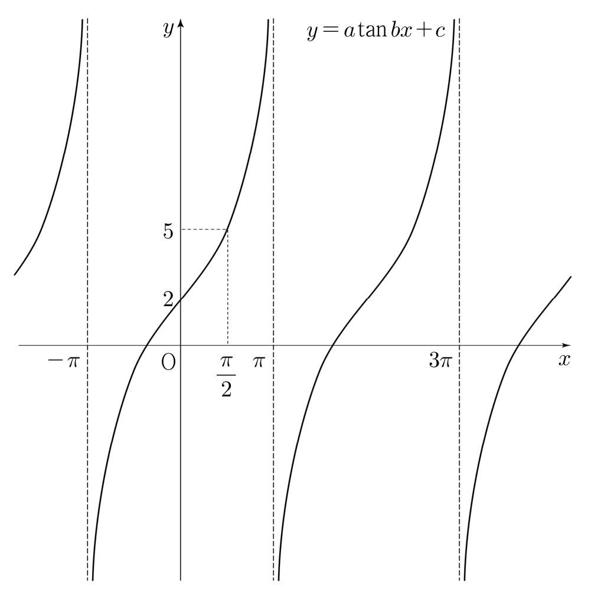
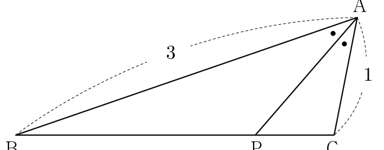
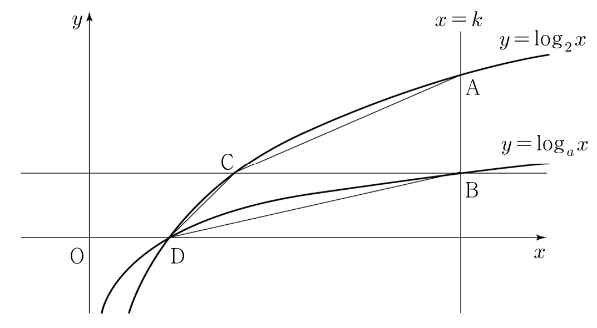
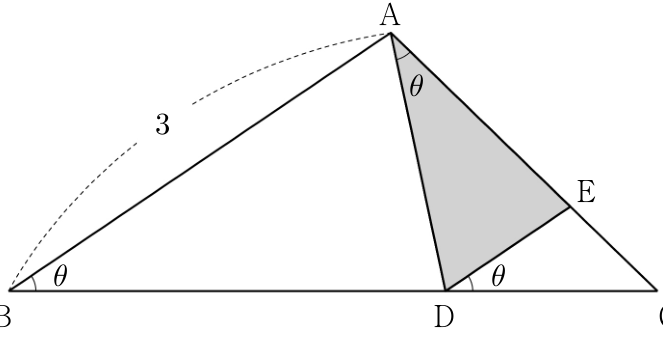
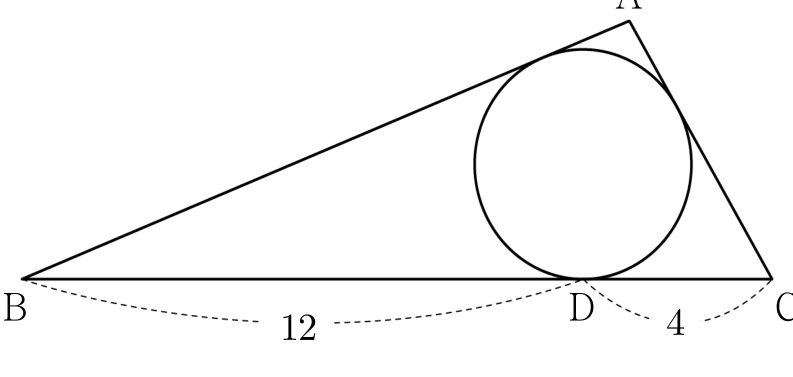

생성기 숫자판 1/6 · G2M1-01b#6$\log_{3}\sqrt{3}+\log_{3}3\sqrt{3}$의 값으로 옳은 것을 고르세요.
① $0$② $1$③ $2$④ $3$⑤ $4$
정답③ $2$ $\log_{3}\sqrt{3}=\log_{3}3^{\frac{1}{2}}=\frac{1}{2}$, $\log_{3}3\sqrt{3}=\log_{3}3^{\frac{3}{2}}=\frac{3}{2}$ 따라서 구하는 값은 $\frac{1}{2}+\frac{3}{2}=2$
숫자: 원본 2 2 2 2 2 → 쌍둥이 3 3 3 3 3
생성기 숫자판 2/6 · G2M1-01b#6$\log_{3}3\sqrt{3}+\log_{3}9\sqrt{3}$의 값으로 옳은 것을 고르세요.
① $2$② $3$③ $4$④ $5$⑤ $6$
정답③ $4$ $\log_{3}3\sqrt{3}=\log_{3}3^{\frac{3}{2}}=\frac{3}{2}$, $\log_{3}9\sqrt{3}=\log_{3}3^{\frac{5}{2}}=\frac{5}{2}$ 따라서 구하는 값은 $\frac{3}{2}+\frac{5}{2}=4$
숫자: 원본 2 2 2 2 2 → 쌍둥이 3 3 3 3 9 3
생성기 숫자판 3/6 · G2M1-01b#6$\log_{5}\sqrt{5}-\log_{5}5\sqrt{5}$의 값으로 옳은 것을 고르세요.
① $-2$② $-1$③ $0$④ $1$⑤ $2$
정답② $-1$ $\log_{5}\sqrt{5}=\log_{5}5^{\frac{1}{2}}=\frac{1}{2}$, $\log_{5}5\sqrt{5}=\log_{5}5^{\frac{3}{2}}=\frac{3}{2}$ 따라서 구하는 값은 $\frac{1}{2}-\frac{3}{2}=-1$
숫자: 원본 2 2 2 2 2 → 쌍둥이 5 5 5 5 5
생성기 숫자판 4/6 · G2M1-01b#6$\log_{5}\frac{\sqrt{5}}{5}+\log_{5}5\sqrt{5}$의 값으로 옳은 것을 고르세요.
① $-2$② $-1$③ $0$④ $1$⑤ $2$
정답④ $1$ $\log_{5}\frac{\sqrt{5}}{5}=\log_{5}5^{-\frac{1}{2}}=-\frac{1}{2}$, $\log_{5}5\sqrt{5}=\log_{5}5^{\frac{3}{2}}=\frac{3}{2}$ 따라서 구하는 값은 $-\frac{1}{2}+\frac{3}{2}=1$
숫자: 원본 2 2 2 2 2 → 쌍둥이 5 5 5 5 5 5
생성기 숫자판 5/6 · G2M1-01b#6$\log_{3}9\sqrt{3}-\log_{3}\sqrt{3}$의 값으로 옳은 것을 고르세요.
① $-2$② $-1$③ $0$④ $1$⑤ $2$
정답⑤ $2$ $\log_{3}9\sqrt{3}=\log_{3}3^{\frac{5}{2}}=\frac{5}{2}$, $\log_{3}\sqrt{3}=\log_{3}3^{\frac{1}{2}}=\frac{1}{2}$ 따라서 구하는 값은 $\frac{5}{2}-\frac{1}{2}=2$
숫자: 원본 2 2 2 2 2 → 쌍둥이 3 9 3 3 3
생성기 숫자판 6/6 · G2M1-01b#6$\log_{5}\sqrt{5}+\log_{5}25\sqrt{5}$의 값으로 옳은 것을 고르세요.
① $3$② $4$③ $5$④ $6$⑤ $7$
정답① $3$ $\log_{5}\sqrt{5}=\log_{5}5^{\frac{1}{2}}=\frac{1}{2}$, $\log_{5}25\sqrt{5}=\log_{5}5^{\frac{5}{2}}=\frac{5}{2}$ 따라서 구하는 값은 $\frac{1}{2}+\frac{5}{2}=3$
숫자: 원본 2 2 2 2 2 → 쌍둥이 5 5 5 25 5
3. 2021년 6월 3번 · 2점 · 수학Ⅰ 삼각함수 · G2M1-02#19
원본 (내부용)반지름의 길이가 \(6\)이고 넓이가 \(15\pi\)인 부채꼴의 중심각의 크기는? [2점]
① \(\frac{\pi}{6}\)② \(\frac{\pi}{3}\)③ \(\frac{\pi}{2}\)④ \(\frac{2}{3}\pi\)⑤ \(\frac{5}{6}\pi\)
원본 정답 ⑤
원본 풀이 (내부용)[출제의도] 부채꼴의 중심각의 크기 계산하기
부채꼴의 넓이를 \(S\), 중심각의 크기를 \(\theta\), 반지름의 길이를 \(r\)라 하면
\(
S=\frac12 r^2\theta
\)
이므로
\(
15\pi=\frac12\times6^2\times\theta
\)
이다. 따라서
\(
\theta=\frac56\pi
\)
생성기 숫자판 1/6 · G2M1-02#19반지름의 길이가 $6$이고 넓이가 $\frac{27}{2}\pi$인 부채꼴의 중심각의 크기로 옳은 것을 고르세요.
① $\frac{\pi}{2}$② $\frac{2}{3}\pi$③ $\frac{3}{4}\pi$④ $\frac{5}{6}\pi$⑤ $\pi$
생성기 숫자판 1/6 · G2M1-01b#6$\log_{5}\sqrt{5}+\log_{5}25\sqrt{5}$의 값으로 옳은 것을 고르세요.
① $3$② $4$③ $5$④ $6$⑤ $7$
정답① $3$ $\log_{5}\sqrt{5}=\log_{5}5^{\frac{1}{2}}=\frac{1}{2}$, $\log_{5}25\sqrt{5}=\log_{5}5^{\frac{5}{2}}=\frac{5}{2}$ 따라서 구하는 값은 $\frac{1}{2}+\frac{5}{2}=3$
숫자: 원본 2 2 3 → 쌍둥이 5 5 5 25 5
생성기 숫자판 2/6 · G2M1-01b#6$\log_{5}\frac{\sqrt{5}}{5}-\log_{5}\sqrt{5}$의 값으로 옳은 것을 고르세요.
① $-5$② $-4$③ $-3$④ $-2$⑤ $-1$
정답⑤ $-1$ $\log_{5}\frac{\sqrt{5}}{5}=\log_{5}5^{-\frac{1}{2}}=-\frac{1}{2}$, $\log_{5}\sqrt{5}=\log_{5}5^{\frac{1}{2}}=\frac{1}{2}$ 따라서 구하는 값은 $-\frac{1}{2}-\frac{1}{2}=-1$
숫자: 원본 2 2 3 → 쌍둥이 5 5 5 5 5
생성기 숫자판 3/6 · G2M1-01b#6$\log_{5}25\sqrt{5}+\log_{5}\sqrt{5}$의 값으로 옳은 것을 고르세요.
① $3$② $4$③ $5$④ $6$⑤ $7$
정답① $3$ $\log_{5}25\sqrt{5}=\log_{5}5^{\frac{5}{2}}=\frac{5}{2}$, $\log_{5}\sqrt{5}=\log_{5}5^{\frac{1}{2}}=\frac{1}{2}$ 따라서 구하는 값은 $\frac{5}{2}+\frac{1}{2}=3$
숫자: 원본 2 2 3 → 쌍둥이 5 25 5 5 5
생성기 숫자판 4/6 · G2M1-01b#6$\log_{3}3\sqrt{3}+\log_{3}9\sqrt{3}$의 값으로 옳은 것을 고르세요.
① $2$② $3$③ $4$④ $5$⑤ $6$
정답③ $4$ $\log_{3}3\sqrt{3}=\log_{3}3^{\frac{3}{2}}=\frac{3}{2}$, $\log_{3}9\sqrt{3}=\log_{3}3^{\frac{5}{2}}=\frac{5}{2}$ 따라서 구하는 값은 $\frac{3}{2}+\frac{5}{2}=4$
숫자: 원본 2 2 3 → 쌍둥이 3 3 3 3 9 3 · 같은 수: 3
생성기 숫자판 5/6 · G2M1-01b#6$\log_{5}\frac{\sqrt{5}}{5}-\log_{5}25\sqrt{5}$의 값으로 옳은 것을 고르세요.
① $-3$② $-2$③ $-1$④ $0$⑤ $1$
정답① $-3$ $\log_{5}\frac{\sqrt{5}}{5}=\log_{5}5^{-\frac{1}{2}}=-\frac{1}{2}$, $\log_{5}25\sqrt{5}=\log_{5}5^{\frac{5}{2}}=\frac{5}{2}$ 따라서 구하는 값은 $-\frac{1}{2}-\frac{5}{2}=-3$
숫자: 원본 2 2 3 → 쌍둥이 5 5 5 5 25 5
생성기 숫자판 6/6 · G2M1-01b#6$\log_{3}\frac{\sqrt{3}}{3}-\log_{3}9\sqrt{3}$의 값으로 옳은 것을 고르세요.
① $-6$② $-5$③ $-4$④ $-3$⑤ $-2$
정답④ $-3$ $\log_{3}\frac{\sqrt{3}}{3}=\log_{3}3^{-\frac{1}{2}}=-\frac{1}{2}$, $\log_{3}9\sqrt{3}=\log_{3}3^{\frac{5}{2}}=\frac{5}{2}$ 따라서 구하는 값은 $-\frac{1}{2}-\frac{5}{2}=-3$
숫자: 원본 2 2 3 → 쌍둥이 3 3 3 3 9 3 · 같은 수: 3
8. 2021년 6월 8번 · 3점 · 수학Ⅰ 지수·로그 · G2M1-04b#1
원본 (내부용)\(-1\le x\le2\)에서 함수 \(f(x)=a\times2^{2-x}+b\)의 최댓값이 \(5\), 최솟값이 \(-2\)일 때, \(f(0)\)의 값은? (단, \(a>0\)이고, \(a\ne b\)는 상수이다.) [3점]
① \(1\)② \(\frac{3}{2}\)③ \(2\)④ \(\frac{5}{2}\)⑤ \(3\)
원본 정답 ①
원본 풀이 (내부용)[출제의도] 지수함수의 그래프 이해하기
함수
\(
f(x)=a\times2^{-x-2}+b
=4a\times\left(\frac12\right)^x+b
\)
는 \(a>0\)이고 밑이 1보다 작으므로, \(x\)의 값이 증가하면 \(y\)의 값은 감소한다.
따라서 함수 \(f(x)\)는 \(x=-1\)일 때 최댓값 5를 갖고,
\(
f(-1)=a\times2^3+b=8a+b=5
\)
\(
f(2)=a\times2^0+b=a+b=-2
\)
이므로 \(a=1,\ b=-3\)이다.
따라서
\(
f(0)=4a+b=4-3=1
\)
생성기 숫자판 1/6 · G2M1-04b#1$-2\le x\le 1$에서 함수 $f\left(x\right)=a\times 2^{1-x}+b$의 최댓값이 $3$, 최솟값이 $-4$일 때, $f\left(0\right)$의 값으로 옳은 것을 고르세요. (단, $a>0$이고, $a$, $b$는 상수입니다.)
① $-7$② $-6$③ $-5$④ $-4$⑤ $-3$
정답⑤ $-3$ $a>0$이고 밑 $2$가 $1$보다 크므로 $f\left(x\right)$는 감소하는 함수 최댓값은 $f\left(-2\right)=8a+b=3$, 최솟값은 $f\left(1\right)=a+b=-4$ 두 식을 연립하면 $a=1$, $b=-5$ 따라서 $f\left(0\right)=2+\left(-5\right)=-3$
원본 (내부용)두 상수 \(a,b\)에 대하여 함수 \(y=\log_2(x-a)+1\)의 그래프가 점 \((7,b)\)를 지나고 점근선이 직선 \(x=3\)일 때, \(a+b\)의 값은? [3점]
① \(3\)② \(4\)③ \(5\)④ \(6\)⑤ \(7\)
원본 정답 ④
원본 풀이 (내부용)[출제의도] 로그함수의 그래프 이해하기
함수 \(y=\log_2(x-a)+1\)의 그래프가 점 \((7,b)\)를 지나므로
\(
b=\log_2(7-a)+1
\)
이다.
함수 \(y=\log_2(x-a)+1\)의 그래프의 점근선이 직선 \(x=3\)이므로 \(a=3\)이고,
\(
b=\log_2(7-3)+1=3
\)
이다. 따라서 \(a+b=6\).
생성기 숫자판 1/6 · G2M1-01#7두 상수 $a$, $b$에 대하여 함수 $y=\log_{2}\left(x-a\right)+3$의 그래프가 점 $\left(7,\ b\right)$를 지나고 점근선이 직선 $x=3$일 때, $a+b$의 값으로 옳은 것을 고르세요.
① $5$② $6$③ $7$④ $8$⑤ $9$
정답④ $8$ 함수 $y=\log_{2}\left(x-a\right)+3$의 그래프의 점근선은 직선 $x=a$이므로 $a=3$ 점 $\left(7,\ b\right)$를 지나므로 $b=\log_{2}\left(7-3\right)+3$ $=\log_{2}4+3$ $=5$ 따라서 $a+b=8$
숫자: 원본 2 1 7 3 → 쌍둥이 2 3 7 3 · 같은 수: 2 3 7
생성기 숫자판 2/6 · G2M1-01#7두 상수 $a$, $b$에 대하여 함수 $y=\log_{3}\left(x-a\right)-2$의 그래프가 점 $\left(13,\ b\right)$를 지나고 점근선이 직선 $x=4$일 때, $a+b$의 값으로 옳은 것을 고르세요.
① $3$② $4$③ $5$④ $6$⑤ $7$
정답② $4$ 함수 $y=\log_{3}\left(x-a\right)-2$의 그래프의 점근선은 직선 $x=a$이므로 $a=4$ 점 $\left(13,\ b\right)$를 지나므로 $b=\log_{3}\left(13-4\right)-2$ $=\log_{3}9-2$ $=0$ 따라서 $a+b=4$
숫자: 원본 2 1 7 3 → 쌍둥이 3 2 13 4 · 같은 수: 2 3
생성기 숫자판 3/6 · G2M1-01#7두 상수 $a$, $b$에 대하여 함수 $y=\log_{3}\left(x-a\right)+2$의 그래프가 점 $\left(15,\ b\right)$를 지나고 점근선이 직선 $x=6$일 때, $a+b$의 값으로 옳은 것을 고르세요.
① $10$② $11$③ $12$④ $13$⑤ $14$
정답① $10$ 함수 $y=\log_{3}\left(x-a\right)+2$의 그래프의 점근선은 직선 $x=a$이므로 $a=6$ 점 $\left(15,\ b\right)$를 지나므로 $b=\log_{3}\left(15-6\right)+2$ $=\log_{3}9+2$ $=4$ 따라서 $a+b=10$
숫자: 원본 2 1 7 3 → 쌍둥이 3 2 15 6 · 같은 수: 2 3
생성기 숫자판 4/6 · G2M1-01#7두 상수 $a$, $b$에 대하여 함수 $y=\log_{3}\left(x-a\right)-1$의 그래프가 점 $\left(4,\ b\right)$를 지나고 점근선이 직선 $x=1$일 때, $a+b$의 값으로 옳은 것을 고르세요.
① $1$② $2$③ $3$④ $4$⑤ $5$
정답① $1$ 함수 $y=\log_{3}\left(x-a\right)-1$의 그래프의 점근선은 직선 $x=a$이므로 $a=1$ 점 $\left(4,\ b\right)$를 지나므로 $b=\log_{3}\left(4-1\right)-1$ $=\log_{3}3-1$ $=0$ 따라서 $a+b=1$
숫자: 원본 2 1 7 3 → 쌍둥이 3 1 4 1 · 같은 수: 1 3
생성기 숫자판 5/6 · G2M1-01#7두 상수 $a$, $b$에 대하여 함수 $y=\log_{2}\left(x-a\right)+3$의 그래프가 점 $\left(5,\ b\right)$를 지나고 점근선이 직선 $x=1$일 때, $a+b$의 값으로 옳은 것을 고르세요.
① $6$② $7$③ $8$④ $9$⑤ $10$
정답① $6$ 함수 $y=\log_{2}\left(x-a\right)+3$의 그래프의 점근선은 직선 $x=a$이므로 $a=1$ 점 $\left(5,\ b\right)$를 지나므로 $b=\log_{2}\left(5-1\right)+3$ $=\log_{2}4+3$ $=5$ 따라서 $a+b=6$
숫자: 원본 2 1 7 3 → 쌍둥이 2 3 5 1 · 같은 수: 1 2 3
생성기 숫자판 6/6 · G2M1-01#7두 상수 $a$, $b$에 대하여 함수 $y=\log_{3}\left(x-a\right)+2$의 그래프가 점 $\left(8,\ b\right)$를 지나고 점근선이 직선 $x=5$일 때, $a+b$의 값으로 옳은 것을 고르세요.
① $8$② $9$③ $10$④ $11$⑤ $12$
정답① $8$ 함수 $y=\log_{3}\left(x-a\right)+2$의 그래프의 점근선은 직선 $x=a$이므로 $a=5$ 점 $\left(8,\ b\right)$를 지나므로 $b=\log_{3}\left(8-5\right)+2$ $=\log_{3}3+2$ $=3$ 따라서 $a+b=8$
숫자: 원본 2 1 7 3 → 쌍둥이 3 2 8 5 · 같은 수: 2 3
10. 2021년 6월 10번 · 3점 · 수학Ⅰ 삼각함수 · G2f-12#0
원본 (내부용)세 양수 \(a,b,c\)에 대하여 함수 \(y=a\tan bx+c\)의 그래프가 그림과 같을 때, \(a\times b\times c\)의 값은? [3점]

① \(1\)② \(2\)③ \(3\)④ \(4\)⑤ \(5\)
그림·참고 도식: \(y=a\tan bx+c\)의 그래프가 증가하는 탄젠트 곡선 세 구간으로 그려져 있고, 수직 점근선은 \(x=-\pi\), \(x=\pi\), \(x=3\pi\)에 있다. 가운데 구간의 그래프는 \(y\)-축과 \(y=2\)에서 만나고, \(x=\frac{\pi}{2}\)일 때 \(y=5\)이다.
원본 정답 ③
원본 풀이 (내부용)[출제의도] 삼각함수의 그래프 이해하기
함수 \(y=a\tan bx+c\)의 주기가 \(2\pi\)이고 \(b>0\)이므로
\(
\frac{\pi}{b}=2\pi
\)
에서 \(b=\frac12\)이다.
함수 \(y=a\tan\frac{x}{2}+c\)의 그래프가 점 \((0,2)\)를 지나므로
\(
2=a\tan0+c
\)
에서 \(c=2\)이다.
함수 \(y=a\tan\frac{x}{2}+2\)의 그래프가 점 \(\left(\frac{\pi}{2},5\right)\)를 지나므로
\(
5=a\tan\frac{\pi}{4}+2
\)
에서 \(a=3\)이다.
따라서 \(a\times b\times c=3\).
생성기 숫자판 1/5 · G2f-12#0세 양수 $a$, $b$, $c$에 대하여 함수 $y=a\tan bx+c$의 그래프가 그림과 같을 때, 주기는 $6\pi$이고 $y$절편은 $5$, 그래프의 기울기 계수는 $a=18$이다. $a\times b\times c$의 값으로 옳은 것을 고르세요.
① $14$② $15$③ $16$④ $17$⑤ $18$
정답② $15$ 이웃한 두 점근선 $x=-3\pi$, $x=3\pi$ 사이의 거리가 주기이므로 주기는 $6\pi$ $b>0$이므로 $\frac{\pi}{b}=6\pi$에서 $b=\frac{1}{6}$ $y$절편이 $5$이므로 $c=5$ $x=\frac{3\pi}{2}$일 때 $y=23$이므로 $a\tan\frac{\pi}{4}+5=23$, $a=18$ 따라서 $a\times b\times c=18\times \frac{1}{6}\times 5=15$
숫자: 원본 - → 쌍둥이 6 5 18
생성기 숫자판 2/5 · G2f-12#0세 양수 $a$, $b$, $c$에 대하여 함수 $y=a\tan bx+c$의 그래프가 그림과 같을 때, 주기는 $4\pi$이고 $y$절편은 $3$, 그래프의 기울기 계수는 $a=4$이다. $a\times b\times c$의 값으로 옳은 것을 고르세요.
① $2$② $3$③ $4$④ $5$⑤ $6$
정답② $3$ 이웃한 두 점근선 $x=-2\pi$, $x=2\pi$ 사이의 거리가 주기이므로 주기는 $4\pi$ $b>0$이므로 $\frac{\pi}{b}=4\pi$에서 $b=\frac{1}{4}$ $y$절편이 $3$이므로 $c=3$ $x=\pi$일 때 $y=7$이므로 $a\tan\frac{\pi}{4}+3=7$, $a=4$ 따라서 $a\times b\times c=4\times \frac{1}{4}\times 3=3$
숫자: 원본 - → 쌍둥이 4 3 4
생성기 숫자판 3/5 · G2f-12#0세 양수 $a$, $b$, $c$에 대하여 함수 $y=a\tan bx+c$의 그래프가 그림과 같을 때, 주기는 $1\pi$이고 $y$절편은 $6$, 그래프의 기울기 계수는 $a=3$이다. $a\times b\times c$의 값으로 옳은 것을 고르세요.
① $16$② $17$③ $18$④ $19$⑤ $20$
정답③ $18$ 이웃한 두 점근선 $x=-\frac{\pi}{2}$, $x=\frac{\pi}{2}$ 사이의 거리가 주기이므로 주기는 $\pi$ $b>0$이므로 $\frac{\pi}{b}=\pi$에서 $b=1$ $y$절편이 $6$이므로 $c=6$ $x=\frac{\pi}{4}$일 때 $y=9$이므로 $a\tan\frac{\pi}{4}+6=9$, $a=3$ 따라서 $a\times b\times c=3\times 1\times 6=18$
숫자: 원본 - → 쌍둥이 1 6 3
생성기 숫자판 4/5 · G2f-12#0세 양수 $a$, $b$, $c$에 대하여 함수 $y=a\tan bx+c$의 그래프가 그림과 같을 때, 주기는 $4\pi$이고 $y$절편은 $5$, 그래프의 기울기 계수는 $a=8$이다. $a\times b\times c$의 값으로 옳은 것을 고르세요.
① $7$② $8$③ $9$④ $10$⑤ $11$
정답④ $10$ 이웃한 두 점근선 $x=-2\pi$, $x=2\pi$ 사이의 거리가 주기이므로 주기는 $4\pi$ $b>0$이므로 $\frac{\pi}{b}=4\pi$에서 $b=\frac{1}{4}$ $y$절편이 $5$이므로 $c=5$ $x=\pi$일 때 $y=13$이므로 $a\tan\frac{\pi}{4}+5=13$, $a=8$ 따라서 $a\times b\times c=8\times \frac{1}{4}\times 5=10$
숫자: 원본 - → 쌍둥이 4 5 8
생성기 숫자판 5/5 · G2f-12#0세 양수 $a$, $b$, $c$에 대하여 함수 $y=a\tan bx+c$의 그래프가 그림과 같을 때, 주기는 $2\pi$이고 $y$절편은 $6$, 그래프의 기울기 계수는 $a=2$이다. $a\times b\times c$의 값으로 옳은 것을 고르세요.
① $2$② $3$③ $4$④ $5$⑤ $6$
정답⑤ $6$ 이웃한 두 점근선 $x=-\pi$, $x=\pi$ 사이의 거리가 주기이므로 주기는 $2\pi$ $b>0$이므로 $\frac{\pi}{b}=2\pi$에서 $b=\frac{1}{2}$ $y$절편이 $6$이므로 $c=6$ $x=\frac{\pi}{2}$일 때 $y=8$이므로 $a\tan\frac{\pi}{4}+6=8$, $a=2$ 따라서 $a\times b\times c=2\times \frac{1}{2}\times 6=6$
숫자: 원본 - → 쌍둥이 2 6 2
11. 2021년 6월 11번 · 3점 · 수학Ⅰ 지수·로그 · G2M1-04#18
원본 (내부용)방정식 \(2^{x-6}=\left(\frac{1}{4}\right)^{x^2}\)의 모든 해의 합은? [3점]
① \(-\frac{9}{2}\)② \(-\frac{7}{2}\)③ \(-\frac{5}{2}\)④ \(-\frac{3}{2}\)⑤ \(-\frac{1}{2}\)
원본 정답 ⑤
원본 풀이 (내부용)[출제의도] 지수함수가 포함된 방정식 이해하기
\(
\left(\frac14\right)^{x^2}=2^{-2x^2}
\)
이므로
\(
2^{x-6}=2^{-2x^2}
\)
에서
\(
x-6=-2x^2
\)
이다.
\(
2x^2+x-6=0,\quad (x+2)(2x-3)=0
\)
에서
\(
x=-2\quad\text{또는}\quad\frac32
\)
이므로 모든 해의 합은 \(-\frac12\).
생성기 숫자판 1/6 · G2M1-04#18방정식 $2^{x-5}=\left(\frac{1}{8}\right)^{x^{2}}$의 모든 해의 합으로 옳은 것을 고르세요.
① $-\frac{4}{3}$② $-\frac{1}{3}$③ $\frac{1}{6}$④ $\frac{1}{3}$⑤ $\frac{2}{3}$
정답② $-\frac{1}{3}$ $\left(\frac{1}{8}\right)^{x^{2}}=2^{-3x^{2}}$ $x-5=-3x^{2}$에서 $3x^{2}+x-5=0$ 판별식 $1+60>0$이므로 서로 다른 두 실근을 갖고, 근과 계수의 관계에 의하여 두 근의 합은 $-\frac{1}{3}$
숫자: 원본 2 6 1 4 → 쌍둥이 2 5 1 8 · 같은 수: 1 2
생성기 숫자판 2/6 · G2M1-04#18방정식 $3^{x-6}=\left(\frac{1}{3}\right)^{x^{2}}$의 모든 해의 합으로 옳은 것을 고르세요.
① $-2$② $-1$③ $-\frac{1}{2}$④ $0$⑤ $1$
정답② $-1$ $\left(\frac{1}{3}\right)^{x^{2}}=3^{-x^{2}}$ $x-6=-x^{2}$에서 $x^{2}+x-6=0$ 판별식 $1+24>0$이므로 서로 다른 두 실근을 갖고, 근과 계수의 관계에 의하여 두 근의 합은 $-1$
숫자: 원본 2 6 1 4 → 쌍둥이 3 6 1 3 · 같은 수: 1 6
생성기 숫자판 3/6 · G2M1-04#18방정식 $3^{x-3}=\left(\frac{1}{3}\right)^{x^{2}}$의 모든 해의 합으로 옳은 것을 고르세요.
① $-4$② $-3$③ $-2$④ $-1$⑤ $1$
정답④ $-1$ $\left(\frac{1}{3}\right)^{x^{2}}=3^{-x^{2}}$ $x-3=-x^{2}$에서 $x^{2}+x-3=0$ 판별식 $1+12>0$이므로 서로 다른 두 실근을 갖고, 근과 계수의 관계에 의하여 두 근의 합은 $-1$
숫자: 원본 2 6 1 4 → 쌍둥이 3 3 1 3 · 같은 수: 1
생성기 숫자판 4/6 · G2M1-04#18방정식 $2^{x-3}=\left(\frac{1}{8}\right)^{x^{2}}$의 모든 해의 합으로 옳은 것을 고르세요.
① $-\frac{7}{3}$② $-\frac{4}{3}$③ $-\frac{1}{3}$④ $\frac{1}{3}$⑤ $\frac{2}{3}$
정답③ $-\frac{1}{3}$ $\left(\frac{1}{8}\right)^{x^{2}}=2^{-3x^{2}}$ $x-3=-3x^{2}$에서 $3x^{2}+x-3=0$ 판별식 $1+36>0$이므로 서로 다른 두 실근을 갖고, 근과 계수의 관계에 의하여 두 근의 합은 $-\frac{1}{3}$
숫자: 원본 2 6 1 4 → 쌍둥이 2 3 1 8 · 같은 수: 1 2
생성기 숫자판 5/6 · G2M1-04#18방정식 $2^{x-5}=\left(\frac{1}{4}\right)^{x^{2}}$의 모든 해의 합으로 옳은 것을 고르세요.
① $-\frac{7}{2}$② $-\frac{5}{2}$③ $-\frac{3}{2}$④ $-\frac{1}{2}$⑤ $\frac{1}{2}$
정답④ $-\frac{1}{2}$ $\left(\frac{1}{4}\right)^{x^{2}}=2^{-2x^{2}}$ $x-5=-2x^{2}$에서 $2x^{2}+x-5=0$ 판별식 $1+40>0$이므로 서로 다른 두 실근을 갖고, 근과 계수의 관계에 의하여 두 근의 합은 $-\frac{1}{2}$
숫자: 원본 2 6 1 4 → 쌍둥이 2 5 1 4 · 같은 수: 1 2 4
생성기 숫자판 6/6 · G2M1-04#18방정식 $2^{x-8}=\left(\frac{1}{4}\right)^{x^{2}}$의 모든 해의 합으로 옳은 것을 고르세요.
① $-\frac{5}{2}$② $-\frac{3}{2}$③ $-\frac{1}{2}$④ $\frac{1}{2}$⑤ $1$
정답③ $-\frac{1}{2}$ $\left(\frac{1}{4}\right)^{x^{2}}=2^{-2x^{2}}$ $x-8=-2x^{2}$에서 $2x^{2}+x-8=0$ 판별식 $1+64>0$이므로 서로 다른 두 실근을 갖고, 근과 계수의 관계에 의하여 두 근의 합은 $-\frac{1}{2}$
숫자: 원본 2 6 1 4 → 쌍둥이 2 8 1 4 · 같은 수: 1 2 4
12. 2021년 6월 12번 · 3점 · 수학Ⅰ 지수·로그 · G2M8-01#3
원본 (내부용)주어진 채널을 통해 신뢰성 있게 전달할 수 있는 최대 정보량을 채널용량이라 한다. 채널용량을 \(C\), 대역폭을 \(W\), 신호전력을 \(S\), 잡음전력을 \(N\)이라 하면 다음과 같은 관계식이 성립한다고 한다. \( C=W\log_2\left(1+\frac{S}{N}\right) \) 대역폭이 \(15\), 신호전력이 \(186\), 잡음전력이 \(a\)인 채널용량이 \(75\)일 때, 상수 \(a\)의 값은? (단, 채널용량의 단위는 bps, 대역폭의 단위는 Hz, 신호전력과 잡음전력의 단위는 모두 Watt이다.) [3점]
① \(3\)② \(4\)③ \(5\)④ \(6\)⑤ \(7\)
그림·참고 도식: 세로선이 페이지를 좌우 두 열로 나눈다. 아래쪽 중앙의 작은 사각형에는 대각선이 그어져 있고, 왼쪽 위에 ‘4’, 오른쪽 아래에 ‘12’가 적혀 있다.
원본 정답 ④
원본 풀이 (내부용)[출제의도] 로그를 이용하여 수학 외적 문제 해결하기
\(C=75,\ W=15,\ S=186,\ N=a\)이므로
\(
75=15\times\log_2\left(1+\frac{186}{a}\right)
\)
이다.
\(
\log_2\left(1+\frac{186}{a}\right)=5
\)
에서
\(
1+\frac{186}{a}=2^5=32
\)
이다. 따라서 \(a=6\).
생성기 숫자판 1/6 · G2M8-01#3어떤 채널의 채널용량을 $C$, 대역폭을 $W$, 신호전력을 $S$, 잡음전력을 $N$이라 하면 관계식 $C=W\log_{2}\left(1+\frac{S}{N}\right)$가 성립한다고 합니다. 대역폭이 $15$, 신호전력이 $120$, 잡음전력이 $a$인 채널의 채널용량이 $60$일 때, 상수 $a$의 값으로 옳은 것을 고르세요. (단, 채널용량의 단위는 bps, 대역폭의 단위는 Hz, 신호전력과 잡음전력의 단위는 모두 Watt입니다.)
숫자: 원본 2 1 15 186 75 → 쌍둥이 2 1 20 28 60 · 같은 수: 1 2
13. 2021년 6월 13번 · 3점 · 수학Ⅰ 삼각함수 · G2M1-02b#14
원본 (내부용)\(0\le x<2\pi\)일 때, 부등식 \(3\sin x-2>0\)의 해가 \(\alpha<x<\beta\)이다. \(\cos(\alpha+\beta)\)의 값은? [3점]
① \(-1\)② \(-\frac{1}{2}\)③ \(0\)④ \(\frac{1}{2}\)⑤ \(1\)
원본 정답 ①
원본 풀이 (내부용)[출제의도] 삼각함수의 그래프를 이용하여 문제 해결하기
\(
3\sin x-2>0
\)
에서
\(
\sin x>\frac23
\)
이다.
\(0\leq x<2\pi\)에서 함수 \(y=\sin x\)의 그래프와 직선 \(y=\frac23\)의 그래프는 그림과 같다.
**그림 정보:** \(y=\sin x\) 곡선은 \(x=0\)에서 시작해 \(x=\frac{\pi}{2}\)에서 \(1\), \(x=\pi\)에서 \(0\), \(x=\frac{3\pi}{2}\)에서 \(-1\), \(x=2\pi\)에서 \(0\)을 지난다. 직선 \(y=\frac23\)과의 교점의 \(x\)좌표는 \(\alpha,\beta\)이며, \(\alpha<\frac{\pi}{2}<\beta\).
\(0\leq x<2\pi\)일 때, 부등식 \(3\sin x-2>0\)의 해가
\(
\alpha<x<\beta
\)
이므로 함수 \(y=\sin x\)의 그래프와 직선 \(y=\frac23\)가 만나는 두 점의 \(x\)좌표는 각각 \(\alpha,\ \beta\ (0<\alpha<\beta<\pi)\)이다.
\(
\frac{\pi}{2}-\alpha=\beta-\frac{\pi}{2}
\)
이므로 \(\alpha+\beta=\pi\)이다.
따라서
\(
\cos(\alpha+\beta)=\cos\pi=-1
\)
생성기 숫자판 1/6 · G2M1-02b#14$0\le x<2\pi$일 때, 부등식 $9\sin x+5>9$의 해가 $\alpha<x<\beta$입니다. $\cos\left(\alpha+\beta\right)$의 값으로 옳은 것을 고르세요.
① $-1$② $-\frac{1}{2}$③ $0$④ $\frac{1}{2}$⑤ $1$
정답① $-1$ 부등식은 $\sin x>\frac{4}{9}$ $y=\sin x$의 그래프는 직선 $x=\frac{\pi}{2}$에 대하여 대칭이므로 해 $\alpha<x<\beta$에서 $\frac{\alpha+\beta}{2}=\frac{\pi}{2}$ $\alpha+\beta=\pi$이므로 $\cos\left(\alpha+\beta\right)=-1$
숫자: 원본 0 2 3 2 0 → 쌍둥이 0 2 9 5 9 · 같은 수: 0 2
생성기 숫자판 2/6 · G2M1-02b#14$0\le x<2\pi$일 때, 부등식 $8\sin x+6>7$의 해가 $\alpha<x<\beta$입니다. $\cos\left(\alpha+\beta\right)$의 값으로 옳은 것을 고르세요.
① $-1$② $-\frac{1}{2}$③ $0$④ $\frac{1}{2}$⑤ $1$
정답① $-1$ 부등식은 $\sin x>\frac{1}{8}$ $y=\sin x$의 그래프는 직선 $x=\frac{\pi}{2}$에 대하여 대칭이므로 해 $\alpha<x<\beta$에서 $\frac{\alpha+\beta}{2}=\frac{\pi}{2}$ $\alpha+\beta=\pi$이므로 $\cos\left(\alpha+\beta\right)=-1$
숫자: 원본 0 2 3 2 0 → 쌍둥이 0 2 8 6 7 · 같은 수: 0 2
생성기 숫자판 3/6 · G2M1-02b#14$0\le x<2\pi$일 때, 부등식 $9\sin x+4>7$의 해가 $\alpha<x<\beta$입니다. $\cos\left(\alpha+\beta\right)$의 값으로 옳은 것을 고르세요.
① $-1$② $-\frac{1}{2}$③ $0$④ $\frac{1}{2}$⑤ $1$
정답① $-1$ 부등식은 $\sin x>\frac{3}{9}$ $y=\sin x$의 그래프는 직선 $x=\frac{\pi}{2}$에 대하여 대칭이므로 해 $\alpha<x<\beta$에서 $\frac{\alpha+\beta}{2}=\frac{\pi}{2}$ $\alpha+\beta=\pi$이므로 $\cos\left(\alpha+\beta\right)=-1$
숫자: 원본 0 2 3 2 0 → 쌍둥이 0 2 9 4 7 · 같은 수: 0 2
생성기 숫자판 4/6 · G2M1-02b#14$0\le x<2\pi$일 때, 부등식 $8\sin x+4>7$의 해가 $\alpha<x<\beta$입니다. $\cos\left(\alpha+\beta\right)$의 값으로 옳은 것을 고르세요.
① $-1$② $-\frac{1}{2}$③ $0$④ $\frac{1}{2}$⑤ $1$
정답① $-1$ 부등식은 $\sin x>\frac{3}{8}$ $y=\sin x$의 그래프는 직선 $x=\frac{\pi}{2}$에 대하여 대칭이므로 해 $\alpha<x<\beta$에서 $\frac{\alpha+\beta}{2}=\frac{\pi}{2}$ $\alpha+\beta=\pi$이므로 $\cos\left(\alpha+\beta\right)=-1$
숫자: 원본 0 2 3 2 0 → 쌍둥이 0 2 8 4 7 · 같은 수: 0 2
생성기 숫자판 5/6 · G2M1-02b#14$0\le x<2\pi$일 때, 부등식 $8\sin x+6>8$의 해가 $\alpha<x<\beta$입니다. $\cos\left(\alpha+\beta\right)$의 값으로 옳은 것을 고르세요.
① $-1$② $-\frac{1}{2}$③ $0$④ $\frac{1}{2}$⑤ $1$
정답① $-1$ 부등식은 $\sin x>\frac{2}{8}$ $y=\sin x$의 그래프는 직선 $x=\frac{\pi}{2}$에 대하여 대칭이므로 해 $\alpha<x<\beta$에서 $\frac{\alpha+\beta}{2}=\frac{\pi}{2}$ $\alpha+\beta=\pi$이므로 $\cos\left(\alpha+\beta\right)=-1$
숫자: 원본 0 2 3 2 0 → 쌍둥이 0 2 8 6 8 · 같은 수: 0 2
생성기 숫자판 6/6 · G2M1-02b#14$0\le x<2\pi$일 때, 부등식 $9\sin x+6>8$의 해가 $\alpha<x<\beta$입니다. $\cos\left(\alpha+\beta\right)$의 값으로 옳은 것을 고르세요.
① $-1$② $-\frac{1}{2}$③ $0$④ $\frac{1}{2}$⑤ $1$
정답① $-1$ 부등식은 $\sin x>\frac{2}{9}$ $y=\sin x$의 그래프는 직선 $x=\frac{\pi}{2}$에 대하여 대칭이므로 해 $\alpha<x<\beta$에서 $\frac{\alpha+\beta}{2}=\frac{\pi}{2}$ $\alpha+\beta=\pi$이므로 $\cos\left(\alpha+\beta\right)=-1$
숫자: 원본 0 2 3 2 0 → 쌍둥이 0 2 9 6 8 · 같은 수: 0 2
14. 2021년 6월 14번 · 4점 · 수학Ⅰ 지수·로그 · 4점 쌍둥이
원본 (내부용)\(x>0\)에서 정의된 함수 \( f(x)= \begin{cases} 0 & (0<x\le1)\\ \log_3 x & (x>1) \end{cases} \) 에 대하여 \(f(t)+f\left(\frac{1}{t}\right)=2\)를 만족시키는 모든 양수 \(t\)의 값의 합은? [4점]
① \(\frac{76}{9}\)② \(\frac{79}{9}\)③ \(\frac{82}{9}\)④ \(\frac{85}{9}\)⑤ \(\frac{88}{9}\)
그림·참고 도식: 세로선이 페이지를 좌우 두 열로 나눈다. 아래쪽 중앙의 작은 사각형에는 대각선이 그어져 있고, 왼쪽 위에 ‘5’, 오른쪽 아래에 ‘12’가 적혀 있다.
원본 정답 ③
원본 풀이 (내부용)[출제의도] 로그함수 이해하기
(i) \(0<t<1\)일 때, \(\frac1t>1\)이므로
\(
f(t)+f\left(\frac1t\right)
=0+\log_3\frac1t=2
\)
에서 \(t=\frac19\)이다.
(ii) \(t=1\)일 때,
\(
f(t)+f\left(\frac1t\right)=0\ne2
\)
(iii) \(t>1\)일 때, \(0<\frac1t<1\)이므로
\(
f(t)+f\left(\frac1t\right)=\log_3t+0=2
\)
에서 \(t=9\)이다.
따라서 \(f(t)+f\left(\frac1t\right)=2\)를 만족시키는 모든 양수 \(t\)의 값의 합은
\(
\frac19+9=\frac{82}{9}
\)
쌍둥이 1/5 · 4점 쌍둥이$x>0$에서 $f(x)=0\ (0<x\le1)$, $f(x)=\log_3x\ (x>1)$로 정의한다. $f(t)+f(1/t)=2$를 만족시키는 모든 양수 $t$의 곱을 구하세요.
① $\frac19$② $\frac13$③ $1$④ $3$⑤ $9$
정답③ $1$ $t>1$이면 $\log_3t=2$, 따라서 $t=9$ $0<t<1$이면 $\log_3(1/t)=2$, 따라서 $t=\frac19$ 두 해의 곱은 $9\times\frac19=1$
쌍둥이 2/5 · 4점 쌍둥이$x>0$에서 정의된 함수 $f\left(x\right)=\begin{cases}0 & \left(0<x\le 1\right)\\\log_{2}x & \left(x>1\right)\end{cases}$에 대하여 $f\left(t\right)+f\left(\frac{1}{t}\right)=3$을 만족시키는 모든 양수 $t$의 값의 합으로 옳은 것을 고르세요.
① $\frac{63}{8}$② $8$③ $\frac{65}{8}$④ $\frac{33}{4}$⑤ $\frac{67}{8}$
쌍둥이 3/5 · 4점 쌍둥이$x>0$에서 정의된 함수 $f\left(x\right)=\begin{cases}0 & \left(0<x\le 1\right)\\\log_{5}x & \left(x>1\right)\end{cases}$에 대하여 $f\left(t\right)+f\left(\frac{1}{t}\right)=1$을 만족시키는 모든 양수 $t$의 값의 합으로 옳은 것을 고르세요.
① $\frac{23}{5}$② $\frac{24}{5}$③ $5$④ $\frac{26}{5}$⑤ $\frac{27}{5}$
쌍둥이 4/5 · 4점 쌍둥이$x>0$에서 정의된 함수 $f\left(x\right)=\begin{cases}0 & \left(0<x\le 1\right)\\\log_{2}x & \left(x>1\right)\end{cases}$에 대하여 $f\left(t\right)+f\left(\frac{1}{t}\right)=2$를 만족시키는 모든 양수 $t$의 값의 합으로 옳은 것을 고르세요.
① $4$② $\frac{17}{4}$③ $\frac{9}{2}$④ $\frac{19}{4}$⑤ $5$
원본 (내부용)그림과 같이 \(\overline{AB}=3\), \(\overline{AC}=1\)이고 \(\angle BAC=\frac{\pi}{3}\)인 삼각형 \(ABC\)가 있다. \(\angle BAC\)의 이등분선이 선분 \(BC\)와 만나는 점을 \(P\)라 할 때, 삼각형 \(APC\)의 외접원의 넓이는? [4점]

① \(\frac{\pi}{4}\)② \(\frac{5}{16}\pi\)③ \(\frac{3}{8}\pi\)④ \(\frac{7}{16}\pi\)⑤ \(\frac{\pi}{2}\)
그림·참고 도식: 삼각형 \(ABC\)에서 \(B,P,C\)는 밑변 \(BC\) 위에 순서대로 놓여 있다. \(AB=3\), \(AC=1\), \(\angle BAC=\frac{\pi}{3}\)이고, \(AP\)는 \(\angle BAC\)의 이등분선이다.
원본 정답 ④
원본 풀이 (내부용)[출제의도] 삼각함수의 활용 문제 해결하기
선분 \(AP\)가 \(\angle BAC\)의 이등분선이고
\(
AB:AC=3:1
\)
이므로 \(BP:PC=3:1\)이다.
\(PC=k\)라 하면 \(BP=3k\)이다.
삼각형 \(ABC\)에서 코사인법칙에 의하여
\(
\cos\frac{\pi}{3}
=\frac{3^2+1^2-(4k)^2}{2\times3\times1}
\)
이므로 \(k=\frac{\sqrt7}{4}\)이다.
삼각형 \(APC\)의 외접원의 반지름의 길이를 \(R\)라 하면 사인법칙에 의하여
\(
\frac{k}{\sin\frac{\pi}{6}}=2R
\)
이므로 \(R=\frac{\sqrt7}{4}\)이다.
따라서 삼각형 \(APC\)의 외접원의 넓이는
\(
\frac{7}{16}\pi
\)
쌍둥이 1/5 · 4점 쌍둥이$\overline{AB}=5$, $\overline{AC}=2$이고 $\angle BAC=\frac{\pi}{3}$인 삼각형 $ABC$가 있습니다. $\angle BAC$의 이등분선이 선분 $BC$와 만나는 점을 $P$라 할 때, 삼각형 $APC$의 외접원의 넓이로 옳은 것을 고르세요.
① $\frac{73\pi}{49}$② $\frac{74\pi}{49}$③ $\frac{75\pi}{49}$④ $\frac{76\pi}{49}$⑤ $\frac{11\pi}{7}$
정답④ $\frac{76\pi}{49}$ 코사인법칙에서 $\overline{BC}^{2}=25+4-2\times5\times2\times\frac{1}{2}=19$ 각의 이등분선의 성질에서 $\overline{BP}:\overline{PC}=5:2$이므로 $\overline{PC}=\frac{2}{7}\sqrt{19}$ 삼각형 $APC$에서 $\angle PAC=\frac{\pi}{6}$이므로 사인법칙에서 $2r=\frac{\overline{PC}}{\sin\frac{\pi}{6}}=2\overline{PC}$, 즉 $r=\overline{PC}$ 외접원의 넓이는 $\pi\times\overline{PC}^{2}=\frac{76\pi}{49}$
숫자: 원본 3 1 3 → 쌍둥이 5 2 3 · 같은 수: 3
쌍둥이 2/5 · 4점 쌍둥이$\overline{AB}=4$, $\overline{AC}=1$이고 $\angle BAC=\frac{\pi}{3}$인 삼각형 $ABC$가 있습니다. $\angle BAC$의 이등분선이 선분 $BC$와 만나는 점을 $P$라 할 때, 삼각형 $APC$의 외접원의 넓이로 옳은 것을 고르세요.
① $\frac{11\pi}{25}$② $\frac{12\pi}{25}$③ $\frac{13\pi}{25}$④ $\frac{14\pi}{25}$⑤ $\frac{3\pi}{5}$
정답③ $\frac{13\pi}{25}$ 코사인법칙에서 $\overline{BC}^{2}=16+1-2\times4\times1\times\frac{1}{2}=13$ 각의 이등분선의 성질에서 $\overline{BP}:\overline{PC}=4:1$이므로 $\overline{PC}=\frac{1}{5}\sqrt{13}$ 삼각형 $APC$에서 $\angle PAC=\frac{\pi}{6}$이므로 사인법칙에서 $2r=\frac{\overline{PC}}{\sin\frac{\pi}{6}}=2\overline{PC}$, 즉 $r=\overline{PC}$ 외접원의 넓이는 $\pi\times\overline{PC}^{2}=\frac{13\pi}{25}$
숫자: 원본 3 1 3 → 쌍둥이 4 1 3 · 같은 수: 1 3
쌍둥이 3/5 · 4점 쌍둥이$\overline{AB}=4$, $\overline{AC}=3$이고 $\angle BAC=\frac{\pi}{3}$인 삼각형 $ABC$가 있습니다. $\angle BAC$의 이등분선이 선분 $BC$와 만나는 점을 $P$라 할 때, 삼각형 $APC$의 외접원의 넓이로 옳은 것을 고르세요.
① $\frac{113\pi}{49}$② $\frac{114\pi}{49}$③ $\frac{115\pi}{49}$④ $\frac{116\pi}{49}$⑤ $\frac{117\pi}{49}$
정답⑤ $\frac{117\pi}{49}$ 코사인법칙에서 $\overline{BC}^{2}=16+9-2\times4\times3\times\frac{1}{2}=13$ 각의 이등분선의 성질에서 $\overline{BP}:\overline{PC}=4:3$이므로 $\overline{PC}=\frac{3}{7}\sqrt{13}$ 삼각형 $APC$에서 $\angle PAC=\frac{\pi}{6}$이므로 사인법칙에서 $2r=\frac{\overline{PC}}{\sin\frac{\pi}{6}}=2\overline{PC}$, 즉 $r=\overline{PC}$ 외접원의 넓이는 $\pi\times\overline{PC}^{2}=\frac{117\pi}{49}$
숫자: 원본 3 1 3 → 쌍둥이 4 3 3 · 같은 수: 3
쌍둥이 4/5 · 4점 쌍둥이삼각형 ABC에서 AB=8, AC=2, ∠BAC=π/3입니다. 각 A의 이등분선이 BC와 만나는 점을 P라 할 때 삼각형 APC의 외접원 넓이는?
① $\frac{48\pi}{25}$② $\frac{50\pi}{25}$③ $\frac{52\pi}{25}$④ $\frac{54\pi}{25}$⑤ $\frac{56\pi}{25}$
정답③ $\frac{52\pi}{25}$ 이는 원래 AB=4, AC=1인 구성의 길이를 2배 확대한 것이다. 닮음에 따라 외접원의 반지름도 2배가 된다. 원래 외접원 넓이는 13π/25이므로 새 넓이는 4·13π/25=52π/25이다.
숫자: 원본 3 1 3 → 쌍둥이 8 2 3 · 같은 수: 3
쌍둥이 5/5 · 4점 쌍둥이삼각형 ABC에서 AB=12, AC=3, ∠BAC=π/3입니다. 각 A의 이등분선이 BC와 만나는 점을 P라 할 때 삼각형 APC의 외접원 넓이는?
① $\frac{111\pi}{25}$② $\frac{114\pi}{25}$③ $\frac{117\pi}{25}$④ $\frac{120\pi}{25}$⑤ $\frac{123\pi}{25}$
정답③ $\frac{117\pi}{25}$ 이 구성은 원래 길이의 3배 확대이므로 외접원 넓이는 9배가 된다. 9·13π/25=117π/25이다.
숫자: 원본 3 1 3 → 쌍둥이 12 3 3 · 같은 수: 3
16. 2021년 6월 16번 · 4점 · 수학Ⅰ 지수·로그 · 4점 쌍둥이
원본 (내부용)상수 \(k\)에 대하여 그림과 같이 직선 \(x=k\ (k>1)\)이 두 함수 \(y=\log_2 x,\ y=\log_a x\ (a>2)\)의 그래프와 만나는 점을 각각 \(A,B\)라 하고, 점 \(B\)를 지나고 \(x\)축에 평행한 직선이 함수 \(y=\log_2 x\)의 그래프와 만나는 점을 \(C\)라 하자. 함수 \(y=\log_2 x\)의 그래프가 \(x\)축과 만나는 점을 \(D\)라 할 때, 삼각형 \(ACB\)와 삼각형 \(BCD\)의 넓이의 비는 \(3:2\)이다. 상수 \(a\)의 값은? [4점]

① \(2\sqrt{2}\)② \(4\)③ \(4\sqrt{2}\)④ \(8\)⑤ \(8\sqrt{2}\)
그림·참고 도식: 좌표축 위에 로그함수 \(y=\log_2x\), \(y=\log_ax\)가 그려져 있다. 수직선 \(x=k\)가 두 그래프와 각각 \(A,B\)에서 만나고, \(B\)를 지나는 수평선이 \(y=\log_2x\)와 \(C\)에서 만난다. \(D\)는 \(y=\log_2x\)와 \(x\)축의 교점이다.
원본 정답 ③
원본 풀이 (내부용)[출제의도] 로그함수의 그래프를 이용하여 문제 해결하기
직선 \(x=k\)가 \(x\)축과 만나는 점을 \(E\)라 하면 삼각형 \(ACB\)와 삼각형 \(BCD\)의 넓이의 비가 \(3:2\)이므로
\(
\frac12\times CB\times AB:\frac12\times CB\times BE=3:2
\)
이다.
\(
AB:BE=3:2
\)
이므로
\(
BE=\frac25 AE
\)
이다.
\(
BE=\log_a k,\quad AE=\log_2 k
\)
이므로
\(
\log_a k=\frac25\log_2 k
\)
에서
\(
a=2^{5/2}=4\sqrt2
\)
쌍둥이 1/5 · 4점 쌍둥이k>1인 직선 x=k가 y=log2x, y=log_ax (a>2)와 만나는 점을 A,B라 합니다. B를 지나 x축에 평행한 직선이 y=log2x와 만나는 점을 C라 하고 D=(1,0)라 합니다. △ACB와 △BCD 넓이의 비가 3:2일 때 a는?
① $2\sqrt2$② $4$③ $4\sqrt2$④ $8$⑤ $8\sqrt2$
정답③ $4\sqrt2$ 두 삼각형은 같은 가로 높이 차 k−x_C를 공유한다. 넓이비는 (log2k−log_ak)/log_ak=log2a−1이다. log2a−1=3/2이므로 log2a=5/2이다. $a=2^{5/2}=4√2$이다.
쌍둥이 2/5 · 4점 쌍둥이상수 $k$에 대하여 직선 $x=k$ $(k>1)$이 두 함수 $y=\log_{2}x$, $y=\log_{a}x$ $(a>2)$의 그래프와 만나는 점을 각각 $A$, $B$라 하고, 점 $B$를 지나고 $x$축에 평행한 직선이 함수 $y=\log_{2}x$의 그래프와 만나는 점을 $C$라 합니다. 함수 $y=\log_{2}x$의 그래프가 $x$축과 만나는 점을 $D$라 할 때, 삼각형 $ACB$와 삼각형 $BCD$의 넓이의 비는 $5:2$입니다. 상수 $a$의 값으로 옳은 것을 고르세요.
① $8\sqrt{2}$② $16$③ $16\sqrt{2}$④ $32$⑤ $32\sqrt{2}$
정답① $8\sqrt{2}$ $A(k,\ \log_{2}k)$, $B(k,\ \log_{a}k)$이고 $C$는 $B$와 $y$좌표가 같습니다. 두 삼각형 $ACB$, $BCD$는 밑변 $\overline{BC}$를 공유하므로 넓이의 비는 높이의 비 $\overline{AB}:\log_{a}k$와 같습니다. $(\log_{2}k-\log_{a}k):\log_{a}k=5:2$에서 $\log_{2}k=\frac{7}{2}\log_{a}k$ $\frac{\log k}{\log2}=\frac{7}{2}\times\frac{\log k}{\log a}$이므로 $\log a=\frac{7}{2}\log2$, $a=2^{\frac{7}{2}}=8\sqrt{2}$
쌍둥이 3/5 · 4점 쌍둥이상수 $k$에 대하여 직선 $x=k$ $(k>1)$이 두 함수 $y=\log_{3}x$, $y=\log_{a}x$ $(a>3)$의 그래프와 만나는 점을 각각 $A$, $B$라 하고, 점 $B$를 지나고 $x$축에 평행한 직선이 함수 $y=\log_{3}x$의 그래프와 만나는 점을 $C$라 합니다. 함수 $y=\log_{3}x$의 그래프가 $x$축과 만나는 점을 $D$라 할 때, 삼각형 $ACB$와 삼각형 $BCD$의 넓이의 비는 $1:2$입니다. 상수 $a$의 값으로 옳은 것을 고르세요.
① $3$② $3\sqrt{3}$③ $9$④ $9\sqrt{3}$⑤ $27$
정답② $3\sqrt{3}$ $A(k,\ \log_{3}k)$, $B(k,\ \log_{a}k)$이고 $C$는 $B$와 $y$좌표가 같습니다. 두 삼각형 $ACB$, $BCD$는 밑변 $\overline{BC}$를 공유하므로 넓이의 비는 높이의 비 $\overline{AB}:\log_{a}k$와 같습니다. $(\log_{3}k-\log_{a}k):\log_{a}k=1:2$에서 $\log_{3}k=\frac{3}{2}\log_{a}k$ $\frac{\log k}{\log3}=\frac{3}{2}\times\frac{\log k}{\log a}$이므로 $\log a=\frac{3}{2}\log3$, $a=3^{\frac{3}{2}}=3\sqrt{3}$
쌍둥이 4/5 · 4점 쌍둥이상수 $k$에 대하여 직선 $x=k$ $(k>1)$이 두 함수 $y=\log_{2}x$, $y=\log_{a}x$ $(a>2)$의 그래프와 만나는 점을 각각 $A$, $B$라 하고, 점 $B$를 지나고 $x$축에 평행한 직선이 함수 $y=\log_{2}x$의 그래프와 만나는 점을 $C$라 합니다. 함수 $y=\log_{2}x$의 그래프가 $x$축과 만나는 점을 $D$라 할 때, 삼각형 $ACB$와 삼각형 $BCD$의 넓이의 비는 $3:1$입니다. 상수 $a$의 값으로 옳은 것을 고르세요.
① $8$② $8\sqrt{2}$③ $16$④ $16\sqrt{2}$⑤ $32$
정답③ $16$ $A(k,\ \log_{2}k)$, $B(k,\ \log_{a}k)$이고 $C$는 $B$와 $y$좌표가 같습니다. 두 삼각형 $ACB$, $BCD$는 밑변 $\overline{BC}$를 공유하므로 넓이의 비는 높이의 비 $\overline{AB}:\log_{a}k$와 같습니다. $(\log_{2}k-\log_{a}k):\log_{a}k=3:1$에서 $\log_{2}k=4\log_{a}k$ $\frac{\log k}{\log2}=4\times\frac{\log k}{\log a}$이므로 $\log a=4\log2$, $a=2^{4}=16$
쌍둥이 5/5 · 4점 쌍둥이같은 도형에서 △ACB와 △BCD 넓이의 비가 7:2일 때 a는?
① $8\sqrt2$② $12\sqrt2$③ $16\sqrt2$④ $20\sqrt2$⑤ $32\sqrt2$
정답③ $16\sqrt2$ 넓이비는 log2a−1이다. log2a−1=7/2에서 log2a=9/2이다. 따라서 $a=2^{9/2}=16√2$이다.
숫자: 원본 1 2 2 2 2 3 2 → 쌍둥이 7 2 · 같은 수: 2
17. 2021년 6월 17번 · 4점 · 수학Ⅰ 삼각함수 · 4점 쌍둥이
원본 (내부용)\(0<\theta<\frac{\pi}{4}\)인 임의의 실수 \(\theta\)에 대하여 그림과 같이 \(\overline{AB}=3\), \(\angle ABC=\theta\), \(\angle CAB=3\theta\)인 삼각형 \(ABC\)가 있다. 선분 \(BC\) 위에 점 \(D\)를 \(\angle DAC=\theta\)가 되도록 잡고, 선분 \(AC\) 위에 점 \(E\)를 \(\angle EDC=\theta\)가 되도록 잡는다. 다음은 삼각형 \(ADE\)의 넓이 \(S(\theta)\)를 구하는 과정이다. \( \angle ABC=\theta,\quad \angle DAB=2\theta \) 이므로 \( \angle BDA=\pi-3\theta \) 이다. 삼각형 \(ABD\)에서 사인법칙에 의하여 \( \frac{\overline{AD}}{\sin\theta} = \frac{\overline{AB}}{\sin(\text{ㄱ})} \) 이므로 \( \overline{AD}=\frac{3\sin\theta}{\sin(\text{ㄱ})} \) 이다. 또한 \(\angle ADE=2\theta\)이므로 \( \overline{DE}=(\text{ㄴ})\times\overline{AD}^{\,2} \) 이다. 따라서 삼각형 \(ADE\)의 넓이 \(S(\theta)\)는 \( S(\theta)=\frac{9}{2}\times\left(\frac{\sin\theta}{\sin3\theta}\right)^3\times(\text{ㄷ}) \) 이다. 위의 (ㄱ), (ㄷ)에 알맞은 식을 각각 \(f(\theta),g(\theta)\)라 하고, (ㄴ)에 알맞은 수를 \(p\)라 할 때, \(p\times f\left(\frac{\pi}{6}\right)\times g\left(\frac{\pi}{12}\right)\)의 값은? [4점]

① \(\frac{1}{12}\)② \(\frac{1}{6}\)③ \(\frac{1}{4}\)④ \(\frac{1}{3}\)⑤ \(\frac{5}{12}\)
그림·참고 도식: 삼각형 \(ABC\)에서 \(D\)는 \(BC\) 위, \(E\)는 \(AC\) 위에 있다. \(AB=3\), \(\angle ABC=\theta\), \(\angle CAB=3\theta\), \(\angle DAC=\theta\), \(\angle EDC=\theta\). 삼각형 \(ADE\) 영역이 음영으로 표시되어 있다.
원본 정답 ②
원본 풀이 (내부용)[출제의도] 사인법칙을 이용하여 삼각형의 넓이 추론하기
\(
\angle ABC=\theta,\quad \angle DAB=2\theta
\)
이므로
\(
\angle BDA=\pi-3\theta
\)
이다.
삼각형 \(ABD\)에서 사인법칙에 의하여
\(
\frac{AD}{\sin\theta}
=\frac{AB}{\sin(\pi-3\theta)}
\)
이므로
\(
AD=\frac{3\sin\theta}{\sin(\pi-3\theta)}
\)
이다.
또한 \(\angle EAD=\theta\)이고 \(\angle ADE=2\theta\)이므로 \(\angle DEA=\pi-3\theta\)이다.
삼각형 \(ADE\)에서 사인법칙에 의하여
\(
\frac{DE}{\sin\theta}
=\frac{AD}{\sin(\pi-3\theta)}
\)
이므로
\(
DE=\frac{\sin\theta}{\sin(\pi-3\theta)}\times AD
=\frac13\times AD^2
\)
이다.
따라서 삼각형 \(ADE\)의 넓이 \(S(\theta)\)는
\(
\begin{aligned}
S(\theta)
&=\frac12\times AD\times DE\times\sin(\angle ADE)\\
&=\frac16\times
\left(\frac{3\sin\theta}{\sin(\pi-3\theta)}\right)^3
\times\sin2\theta\\
&=\frac92\times
\left(\frac{\sin\theta}{\sin3\theta}\right)^3
\times\sin2\theta
\end{aligned}
\)
이다.
\(
f(\theta)=\sin(\pi-3\theta),\quad
g(\theta)=\sin2\theta,\quad p=\frac13
\)
이므로
\(
p\times f\left(\frac{\pi}{6}\right)\times
g\left(\frac{\pi}{12}\right)
=\frac13\times\sin\frac{\pi}{2}\times\sin\frac{\pi}{6}
=\frac16
\)
2021학년도 6월
## 수학 영역
쌍둥이 1/5 · 4점 쌍둥이$0<\theta<\frac{\pi}{7}$이고 $\overline{AB}=6$, $\angle ABC=\theta$, $\angle CAB=6\theta$인 삼각형 $ABC$가 있다. $D$는 선분 $BC$ 위의 점으로 $\angle DAC=\theta$이고, $E$는 선분 $AC$ 위의 점으로 $\angle EDC=\theta$이다. 다음은 삼각형 $ADE$의 넓이 $S(\theta)$를 구하는 과정이다.
$\angle ABC=\theta$, $\angle DAB=5\theta$이므로 $\angle BDA=\pi-6\theta$이다. 삼각형 $ABD$에서 사인법칙에 의하여
$\frac{\overline{AD}}{\sin\theta}=\frac{\overline{AB}}{\sin(\boxed{\text{(가)}})}$이다.
또한 $\angle ADE=5\theta$이므로 $\overline{DE}=\boxed{\text{(나)}}\,\overline{AD}^2$이다.
따라서 $S(\theta)=\frac{36}2\left(\frac{\sin\theta}{\sin(6\theta)}\right)^3\boxed{\text{(다)}}$이다.
(가)에 들어갈 식을 $u(\theta)$라 하고 $f(\theta)=\sin u(\theta)$라 하자. (다)에 알맞은 식을 $g(\theta)$, (나)에 알맞은 수를 $p$라 할 때, $p f\left(\frac{\pi}{12}\right)+g\left(\frac{\pi}{10}\right)$의 값을 구하시오.
① ① $1$② ② $\frac76$③ ③ $\frac43$④ ④ $\frac32$⑤ ⑤ $\frac53$
정답② ② $\frac76$ 삼각형 $ABD$에서 $\angle BDA=\pi-6\theta$이므로 (가)는 $\pi-6\theta$이고, $f(\theta)=\sin(\pi-6\theta)=\sin(6\theta)$. 따라서 $AD=6\sin\theta/\sin(6\theta)$이다. 삼각형 $ADE$의 각은 $\theta,(5)\theta,\pi-6\theta$이다. 사인법칙으로 $DE/AD=\sin\theta/\sin(6\theta)$이므로 (나)는 $1/6$이다. 넓이는 $36/2(\sin\theta/\sin(6\theta))^3\sin((5)\theta)$이므로 (다)는 $\sin((5)\theta)$이다. 두 대입값에서 $f=1$, $g=1$이므로 구하는 값은 $1+1/6=\frac{7}{6}$이다.
쌍둥이 2/5 · 4점 쌍둥이$0<\theta<\frac{\pi}{5}$이고 $\overline{AB}=4$, $\angle ABC=\theta$, $\angle CAB=4\theta$인 삼각형 $ABC$가 있다. $D$는 선분 $BC$ 위의 점으로 $\angle DAC=\theta$이고, $E$는 선분 $AC$ 위의 점으로 $\angle EDC=\theta$이다. 다음은 삼각형 $ADE$의 넓이 $S(\theta)$를 구하는 과정이다.
$\angle ABC=\theta$, $\angle DAB=3\theta$이므로 $\angle BDA=\pi-4\theta$이다. 삼각형 $ABD$에서 사인법칙에 의하여
$\frac{\overline{AD}}{\sin\theta}=\frac{\overline{AB}}{\sin(\boxed{\text{(가)}})}$이다.
또한 $\angle ADE=3\theta$이므로 $\overline{DE}=\boxed{\text{(나)}}\,\overline{AD}^2$이다.
따라서 $S(\theta)=\frac{16}2\left(\frac{\sin\theta}{\sin(4\theta)}\right)^3\boxed{\text{(다)}}$이다.
(가)에 들어갈 식을 $u(\theta)$라 하고 $f(\theta)=\sin u(\theta)$라 하자. (다)에 알맞은 식을 $g(\theta)$, (나)에 알맞은 수를 $p$라 할 때, $p f\left(\frac{\pi}{8}\right)+g\left(\frac{\pi}{6}\right)$의 값을 구하시오.
① ① $1$② ② $\frac65$③ ③ $\frac54$④ ④ $\frac32$⑤ ⑤ $\frac74$
정답③ ③ $\frac54$ 삼각형 $ABD$에서 $\angle BDA=\pi-4\theta$이므로 (가)는 $\pi-4\theta$이고, $f(\theta)=\sin(\pi-4\theta)=\sin(4\theta)$. 따라서 $AD=4\sin\theta/\sin(4\theta)$이다. 삼각형 $ADE$의 각은 $\theta,(3)\theta,\pi-4\theta$이다. 사인법칙으로 $DE/AD=\sin\theta/\sin(4\theta)$이므로 (나)는 $1/4$이다. 넓이는 $16/2(\sin\theta/\sin(4\theta))^3\sin((3)\theta)$이므로 (다)는 $\sin((3)\theta)$이다. 두 대입값에서 $f=1$, $g=1$이므로 구하는 값은 $1+1/4=\frac{5}{4}$이다.
쌍둥이 3/5 · 4점 쌍둥이$0<\theta<\frac{\pi}{6}$이고 $\overline{AB}=5$, $\angle ABC=\theta$, $\angle CAB=5\theta$인 삼각형 $ABC$가 있다. $D$는 선분 $BC$ 위의 점으로 $\angle DAC=\theta$이고, $E$는 선분 $AC$ 위의 점으로 $\angle EDC=\theta$이다. 다음은 삼각형 $ADE$의 넓이 $S(\theta)$를 구하는 과정이다.
$\angle ABC=\theta$, $\angle DAB=4\theta$이므로 $\angle BDA=\pi-5\theta$이다. 삼각형 $ABD$에서 사인법칙에 의하여
$\frac{\overline{AD}}{\sin\theta}=\frac{\overline{AB}}{\sin(\boxed{\text{(가)}})}$이다.
또한 $\angle ADE=4\theta$이므로 $\overline{DE}=\boxed{\text{(나)}}\,\overline{AD}^2$이다.
따라서 $S(\theta)=\frac{25}2\left(\frac{\sin\theta}{\sin(5\theta)}\right)^3\boxed{\text{(다)}}$이다.
(가)에 들어갈 식을 $u(\theta)$라 하고 $f(\theta)=\sin u(\theta)$라 하자. (다)에 알맞은 식을 $g(\theta)$, (나)에 알맞은 수를 $p$라 할 때, $p f\left(\frac{\pi}{10}\right)+g\left(\frac{\pi}{8}\right)$의 값을 구하시오.
① ① $1$② ② $\frac65$③ ③ $\frac75$④ ④ $\frac85$⑤ ⑤ $2$
정답② ② $\frac65$ 삼각형 $ABD$에서 $\angle BDA=\pi-5\theta$이므로 (가)는 $\pi-5\theta$이고, $f(\theta)=\sin(\pi-5\theta)=\sin(5\theta)$. 따라서 $AD=5\sin\theta/\sin(5\theta)$이다. 삼각형 $ADE$의 각은 $\theta,(4)\theta,\pi-5\theta$이다. 사인법칙으로 $DE/AD=\sin\theta/\sin(5\theta)$이므로 (나)는 $1/5$이다. 넓이는 $25/2(\sin\theta/\sin(5\theta))^3\sin((4)\theta)$이므로 (다)는 $\sin((4)\theta)$이다. 두 대입값에서 $f=1$, $g=1$이므로 구하는 값은 $1+1/5=\frac{6}{5}$이다.
쌍둥이 4/5 · 4점 쌍둥이$0<\theta<\frac{\pi}{6}$이고 $AB=7$, $\angle ABC=\theta$, $\angle CAB=5\theta$인 삼각형 $ABC$가 있다. $D$는 $BC$ 위에서 $\angle DAC=\theta$, $E$는 $AC$ 위에서 $\angle EDC=\theta$가 되게 잡는다. $[ADE]=S(\theta)$일 때 $\lim_{\theta\to0+}S(\theta)/\theta$를 구하시오.
① $94/125$② $96/125$③ $98/125$④ $100/125$⑤ $102/125$
정답③ $98/125$ 사인법칙으로 $AD=L\sin\theta/\sin(n\theta)$, $DE=AD\sin\theta/\sin(n\theta)$입니다. 따라서 $S=\frac{L^2}{2}(\sin\theta/\sin(n\theta))^3\sin((n-1)\theta)$이고 극한은 $L^2(n-1)/(2n^3)=98/125$입니다.
쌍둥이 5/5 · 4점 쌍둥이$0<\theta<\frac{\pi}{7}$이고 $AB=8$, $\angle ABC=\theta$, $\angle CAB=6\theta$인 삼각형 $ABC$가 있다. $D$는 $BC$ 위에서 $\angle DAC=\theta$, $E$는 $AC$ 위에서 $\angle EDC=\theta$가 되게 잡는다. $[ADE]=S(\theta)$일 때 $\lim_{\theta\to0+}S(\theta)/\theta$를 구하시오.
① $18/27$② $19/27$③ $20/27$④ $21/27$⑤ $22/27$
정답③ $20/27$ 같은 식에서 $L=8,n=6$을 대입하면 $64\cdot5/(2\cdot216)=20/27$입니다.
원본 (내부용)반지름의 길이가 \(\frac{4\sqrt{3}}{3}\)인 원이 삼각형 \(ABC\)에 내접하고 있다. 원이 선분 \(BC\)와 만나는 점을 \(D\)라 하고 \(\overline{BD}=12,\ \overline{DC}=4\)일 때, 삼각형 \(ABC\)의 둘레의 길이는? [4점]

① \(\frac{71}{2}\)② \(36\)③ \(\frac{73}{2}\)④ \(37\)⑤ \(\frac{75}{2}\)
그림·참고 도식: 원이 삼각형 \(ABC\)에 내접하고 밑변 \(BC\)에 \(D\)에서 접한다. \(BD=12,\ DC=4\)이며, 원의 반지름은 \(\frac{4\sqrt3}{3}\)이다.
원본 정답 ②
원본 풀이 (내부용)[출제의도] 삼각함수의 정의를 이용하여 삼각함수 문제 해결하기
그림과 같이 원의 중심을 \(O\)라 하고, 원과 두 선분 \(AB, AC\)가 만나는 점을 각각 \(E,F\)라 하자.
\(
\tan(\angle OCD)=\frac{\sqrt3}{3}\text{ 이므로 }\angle OCD=\frac{\pi}{6}.
\)
\(
\angle ACB=\frac{\pi}{3}\text{ 이다. }AE=a\text{라 하면 }AF=a\text{이고}
\)
\(
\begin{aligned}
(\text{삼각형 }ABC\text{의 넓이})
&=\frac12\times16\times(a+4)\times\sin\frac{\pi}{3}\\
&=4\sqrt3(a+4)
\end{aligned}
\)
\(
\begin{aligned}
&(\text{삼각형 }OAB\text{의 넓이})\\
&+(\text{삼각형 }OBC\text{의 넓이})\\
&+(\text{삼각형 }OCA\text{의 넓이})\\
&=\frac12\times\frac{4\sqrt3}{3}\times\{(a+12)+16+(a+4)\}\\
&=\frac{4\sqrt3}{3}(a+16)\text{이다.}
\end{aligned}
\)
그러므로 \(4\sqrt3(a+4)=\frac{4\sqrt3}{3}(a+16)\)에서 \(a=2\)이다. 따라서 삼각형 \(ABC\)의 둘레의 길이는
\(
2\times(12+4+2)=36
\)
**[다른 풀이]**
삼각형 \(BCA\)에서 코사인법칙에 의하여
\(
\cos\frac{\pi}{3}
=\frac{16^2+(a+4)^2-(a+12)^2}{2\times16\times(a+4)}
\)
이므로 \(a=2\)이다.
쌍둥이 1/5 · 4점 쌍둥이반지름의 길이가 $\sqrt{15}$인 원이 삼각형 $ABC$에 내접하고 있습니다. 원이 선분 $BC$와 만나는 점을 $D$라 하고 $\overline{BD}=15$, $\overline{DC}=5$일 때, 삼각형 $ABC$의 둘레의 길이로 옳은 것을 고르세요.
① $47$② $48$③ $49$④ $50$⑤ $51$
정답④ $50$ 점 $A$에서 원에 그은 접선의 길이를 $x$라 하면 세 변의 길이는 $x+15$, $x+5$, $20$이고, $s=x+20$입니다. 넓이를 두 가지로 나타내면 $rs=\sqrt{s\times x\times15\times5}$이므로 $r^2 s=75x$, 즉 $15(x+20)=75x$ $x=5$ 둘레의 길이는 $2s=2\times(5+20)=50$
숫자: 원본 4 3 3 12 4 → 쌍둥이 15 15 5
쌍둥이 2/5 · 4점 쌍둥이반지름의 길이가 $\frac{2\sqrt{3}}{3}$인 원이 삼각형 $ABC$에 내접하고 있습니다. 원이 선분 $BC$와 만나는 점을 $D$라 하고 $\overline{BD}=6$, $\overline{DC}=2$일 때, 삼각형 $ABC$의 둘레의 길이로 옳은 것을 고르세요.
① $16$② $17$③ $18$④ $19$⑤ $20$
정답③ $18$ 점 $A$에서 원에 그은 접선의 길이를 $x$라 하면 세 변의 길이는 $x+6$, $x+2$, $8$이고, $s=x+8$입니다. 넓이를 두 가지로 나타내면 $rs=\sqrt{s\times x\times6\times2}$이므로 $r^2 s=12x$, 즉 $\frac{4}{3}(x+8)=12x$ $x=1$ 둘레의 길이는 $2s=2\times(1+8)=18$
숫자: 원본 4 3 3 12 4 → 쌍둥이 2 3 3 6 2 · 같은 수: 3
쌍둥이 3/5 · 4점 쌍둥이반지름의 길이가 $2\sqrt{3}$인 원이 삼각형 $ABC$에 내접하고 있습니다. 원이 선분 $BC$와 만나는 점을 $D$라 하고 $\overline{BD}=18$, $\overline{DC}=6$일 때, 삼각형 $ABC$의 둘레의 길이로 옳은 것을 고르세요.
① $52$② $53$③ $54$④ $55$⑤ $56$
정답③ $54$ 점 $A$에서 원에 그은 접선의 길이를 $x$라 하면 세 변의 길이는 $x+18$, $x+6$, $24$이고, $s=x+24$입니다. 넓이를 두 가지로 나타내면 $rs=\sqrt{s\times x\times18\times6}$이므로 $r^2 s=108x$, 즉 $12(x+24)=108x$ $x=3$ 둘레의 길이는 $2s=2\times(3+24)=54$
숫자: 원본 4 3 3 12 4 → 쌍둥이 2 3 18 6 · 같은 수: 3
쌍둥이 4/5 · 4점 쌍둥이반지름의 길이가 $\sqrt{5}$인 원이 삼각형 $ABC$에 내접하고 있습니다. 원이 선분 $BC$와 만나는 점을 $D$라 하고 $\overline{BD}=10$, $\overline{DC}=4$일 때, 삼각형 $ABC$의 둘레의 길이로 옳은 것을 고르세요.
① $29$② $30$③ $31$④ $32$⑤ $33$
정답④ $32$ 점 $A$에서 원에 그은 접선의 길이를 $x$라 하면 세 변의 길이는 $x+10$, $x+4$, $14$이고, $s=x+14$입니다. 넓이를 두 가지로 나타내면 $rs=\sqrt{s\times x\times10\times4}$이므로 $r^2 s=40x$, 즉 $5(x+14)=40x$ $x=2$ 둘레의 길이는 $2s=2\times(2+14)=32$
숫자: 원본 4 3 3 12 4 → 쌍둥이 5 10 4 · 같은 수: 4
쌍둥이 5/5 · 4점 쌍둥이반지름의 길이가 $\sqrt{3}$인 원이 삼각형 $ABC$에 내접하고 있습니다. 원이 선분 $BC$와 만나는 점을 $D$라 하고 $\overline{BD}=9$, $\overline{DC}=3$일 때, 삼각형 $ABC$의 둘레의 길이로 옳은 것을 고르세요.
① $24$② $25$③ $26$④ $27$⑤ $28$
정답④ $27$ 점 $A$에서 원에 그은 접선의 길이를 $x$라 하면 세 변의 길이는 $x+9$, $x+3$, $12$이고, $s=x+12$입니다. 넓이를 두 가지로 나타내면 $rs=\sqrt{s\times x\times9\times3}$이므로 $r^2 s=27x$, 즉 $3(x+12)=27x$ $x=\frac{3}{2}$ 둘레의 길이는 $2s=2\times(\frac{3}{2}+12)=27$
숫자: 원본 4 3 3 12 4 → 쌍둥이 3 9 3 · 같은 수: 3
19. 2021년 6월 19번 · 4점 · 수학Ⅰ 지수·로그 · 4점 쌍둥이
원본 (내부용)부등식 \( (\sqrt{2}-1)^m\ge(3-2\sqrt{2})^{5-n} \) 을 만족시키는 자연수 \(m,n\)의 모든 순서쌍 \((m,n)\)의 개수는? [4점]
① \(17\)② \(18\)③ \(19\)④ \(20\)⑤ \(21\)
원본 정답 ④
원본 풀이 (내부용)[출제의도] 지수함수가 포함된 부등식 문제 해결하기
\(p=\sqrt2-1\)이라 하면 \(p^2=3-2\sqrt2\)이고
\(
(p^2)^{5-n}=p^{10-2n}\text{ 이므로 }p^m\ge p^{10-2n}\text{이다.}
\)
\(0<p<1\)이므로 \(m\le10-2n\)이다.
(i) \(n=1\)일 때, \(1\le m\le8\)
(ii) \(n=2\)일 때, \(1\le m\le6\)
(iii) \(n=3\)일 때, \(1\le m\le4\)
(iv) \(n=4\)일 때, \(1\le m\le2\)
(v) \(n\ge5\)일 때, 부등식을 만족시키는 자연수 \(m\)은 존재하지 않는다.
따라서 부등식을 만족시키는 자연수 \(m,n\)의 모든 순서쌍 \((m,n)\)의 개수는
\(
8+6+4+2=20
\)
쌍둥이 1/5 · 4점 쌍둥이부등식 $(\sqrt{5}-2)^{m}\ge(9-4\sqrt{5})^{4-n}$을 만족시키는 자연수 $m$, $n$의 모든 순서쌍 $(m,\ n)$의 개수로 옳은 것을 고르세요.
① $9$② $10$③ $11$④ $12$⑤ $13$
정답④ $12$ $9-4\sqrt{5}=(\sqrt{5}-2)^{2}$이므로 주어진 부등식은 $(\sqrt{5}-2)^{m}\ge(\sqrt{5}-2)^{8-2n}$ $0<\sqrt{5}-2<1$이므로 $m\le8-2n$ $m\ge1$이므로 $n$은 $1$부터 $3$까지이고, $n=k$일 때 $m$은 $8-2k$개 순서쌍의 개수는 6+4+2 $=12$
숫자: 원본 2 1 3 2 2 → 쌍둥이 5 2 9 4 5 · 같은 수: 2
쌍둥이 2/5 · 4점 쌍둥이부등식 $(\sqrt{3}-\sqrt{2})^{m}\ge(5-2\sqrt{6})^{6-n}$을 만족시키는 자연수 $m$, $n$의 모든 순서쌍 $(m,\ n)$의 개수로 옳은 것을 고르세요.
① $28$② $29$③ $30$④ $31$⑤ $32$
정답③ $30$ $5-2\sqrt{6}=(\sqrt{3}-\sqrt{2})^{2}$이므로 주어진 부등식은 $(\sqrt{3}-\sqrt{2})^{m}\ge(\sqrt{3}-\sqrt{2})^{12-2n}$ $0<\sqrt{3}-\sqrt{2}<1$이므로 $m\le12-2n$ $m\ge1$이므로 $n$은 $1$부터 $5$까지이고, $n=k$일 때 $m$은 $12-2k$개 순서쌍의 개수는 10+8+6+4+2 $=30$
숫자: 원본 2 1 3 2 2 → 쌍둥이 3 2 5 2 6 · 같은 수: 2 3
쌍둥이 3/5 · 4점 쌍둥이부등식 $(\sqrt{3}-1)^{m}\ge(4-2\sqrt{3})^{7-n}$을 만족시키는 자연수 $m$, $n$의 모든 순서쌍 $(m,\ n)$의 개수로 옳은 것을 고르세요.
① $38$② $39$③ $40$④ $41$⑤ $42$
정답⑤ $42$ $4-2\sqrt{3}=(\sqrt{3}-1)^{2}$이므로 주어진 부등식은 $(\sqrt{3}-1)^{m}\ge(\sqrt{3}-1)^{14-2n}$ $0<\sqrt{3}-1<1$이므로 $m\le14-2n$ $m\ge1$이므로 $n$은 $1$부터 $6$까지이고, $n=k$일 때 $m$은 $14-2k$개 순서쌍의 개수는 12+10+8+6+4+2 $=42$
숫자: 원본 2 1 3 2 2 → 쌍둥이 3 1 4 2 3 · 같은 수: 1 2 3
쌍둥이 4/5 · 4점 쌍둥이자연수 $m$, $n$에 대하여 부등식 $(\sqrt2-1)^m\ge(3-2\sqrt2)^{8-n}$을 만족시키는 모든 순서쌍 $(m,n)$의 $m$좌표의 합을 구하세요.
① $280$② $296$③ $308$④ $320$⑤ $332$
정답③ $308$ $3-2\sqrt2=(\sqrt2-1)^2$이고 $0<\sqrt2-1<1$이므로 부등식은 $m\le2(8-n)$과 동치이다. 가능한 $n$은 $1,\ldots,7$이다. 각 $n$에 대한 $m$의 범위는 각각 $1\le m\le14,12,10,8,6,4,2$이다. 따라서 $m$좌표의 합은 $\frac{14\cdot15}{2}+\frac{12\cdot13}{2}+\frac{10\cdot11}{2}+\frac{8\cdot9}{2}+\frac{6\cdot7}{2}+\frac{4\cdot5}{2}+\frac{2\cdot3}{2}=308$이다.
숫자: 원본 2 1 3 2 2 → 쌍둥이 2 1 3 2 2 · 같은 수: 1 2 3
쌍둥이 5/5 · 4점 쌍둥이자연수 $m$, $n$에 대하여 부등식 $(\sqrt6-\sqrt5)^m\ge(11-2\sqrt{30})^{9-n}$을 만족시키는 모든 순서쌍 $(m,n)$의 $m$좌표의 합을 구하세요.
① $420$② $432$③ $444$④ $456$⑤ $468$
정답③ $444$ $11-2\sqrt{30}=(\sqrt6-\sqrt5)^2$이고 $0<\sqrt6-\sqrt5<1$이므로 부등식은 $m\le2(9-n)$과 동치이다. 가능한 $n$은 $1,\ldots,8$이다. 각 $n$에 대한 $m$의 범위는 각각 $1\le m\le16,14,12,10,8,6,4,2$이다. 따라서 $m$좌표의 합은 $\frac{16\cdot17}{2}+\frac{14\cdot15}{2}+\frac{12\cdot13}{2}+\frac{10\cdot11}{2}+\frac{8\cdot9}{2}+\frac{6\cdot7}{2}+\frac{4\cdot5}{2}+\frac{2\cdot3}{2}=444$이다.
숫자: 원본 2 1 3 2 2 → 쌍둥이 6 5 11 2 30 · 같은 수: 2
20. 2021년 6월 20번 · 4점 · 수학Ⅰ 지수·로그 · 4점 쌍둥이
원본 (내부용)자연수 \(n\)에 대하여 직선 \(y=1\)이 곡선 \(y=2^x-1\), 직선 \(y=-(1+\log_2 n)x+7\)과 만나는 점을 각각 \(A,B\)라 하자. 두 점 \(A,B\) 사이의 거리를 \(f(n)\)이라 할 때, <보기>에서 옳은 것만을 있는 대로 고른 것은? [4점] <보기> ㄱ. \(f(2)=2\) ㄴ. \(f(n)\ge1\)을 만족시키는 \(n\)의 개수는 4이다. ㄷ. \(\left|f(n)-1\right|\ge\frac{2}{3}\)를 만족시키는 \(n\)의 개수는 245이다.
① ㄴ② ㄷ③ ㄱ, ㄴ④ ㄱ, ㄷ⑤ ㄱ, ㄴ, ㄷ
그림·참고 도식: 세로선이 페이지를 좌우 두 열로 나눈다. 아래쪽 중앙의 작은 사각형에는 대각선이 그어져 있고, 왼쪽 위에 ‘8’, 오른쪽 아래에 ‘12’가 적혀 있다.
원본 정답 ③
원본 풀이 (내부용)[출제의도] 지수함수와 로그함수의 그래프를 이용하여 명제 추론하기
ㄱ. \(n=2\)일 때, \(A(1,1), B(3,1)\)이므로 \(f(2)=2\) (참)
ㄴ. 점 \(B\)의 좌표는 \(\left(\frac{6}{1+\log_2 n},1\right)\)이므로
\(
f(n)=\frac{6}{1+\log_2 n}-1\text{이다.}
\)
\(f(n)\ge1\)을 만족시키는 \(f(n)\)은
\(
\frac{6}{1+\log_2 n}-1\ge1
\)
에서 \(1+\log_2 n\le3\)이므로 \(1\le n\le4\)이다.
따라서 \(f(n)\ge1\)을 만족시키는 자연수 \(n\)의 개수는 \(4\) (참)
ㄷ. \(|f(n)-1|\ge\frac23\)에서 \(f(n)\ge\frac53\) 또는 \(0\le f(n)\le\frac13\)이다.
(i) \(f(n)\ge\frac53\)을 만족시키는 \(f(n)\)은
\(
f(n)=\left|\frac{6}{1+\log_2 n}-1\right|\text{이다.}
\)
\(
\frac{6}{1+\log_2 n}-1\ge\frac53
\)
에서 \(\frac{6}{1+\log_2 n}\ge\frac83\)이므로 \(\log_2 n\le\frac54\)이다. 따라서 \(1\le n\le2^{5/4}\)이고 \(2<2^{5/4}<3\)이므로 자연수 \(n\)은 \(1,2\)이다.
(ii) \(0\le f(n)\le\frac13\)을 만족시키는 \(f(n)\)은
\(
f(n)=\left|\frac{6}{1+\log_2 n}-1\right|\text{이다.}
\)
\(
0\le\left|\frac{6}{1+\log_2 n}-1\right|\le\frac13
\)
에서 \(\frac23\le\frac{6}{1+\log_2 n}\le\frac43\)이므로
\(
\frac72\le\log_2 n\le8
\)
이다. 따라서 \(2^{7/2}\le n\le2^8\)이고 \(11<2^{7/2}<12\)이므로 자연수 \(n\)은 \(12,13,\cdots,256\)이다.
(i), (ii)에서 \(n=1,2,12,13,\cdots,256\)이므로
\(
|f(n)-1|\ge\frac23
\)
를 만족시키는 자연수 \(n\)의 개수는 \(247\) (거짓)
쌍둥이 1/5 · 4점 쌍둥이자연수 $n$에 대하여 직선 $y=1$이 곡선 $y=2^{x}-1$, 직선 $y=-\left(1+\log_{2}n\right)x+5$와 만나는 점을 각각 $\mathrm{A}$, $\mathrm{B}$라 하고, 두 점 $\mathrm{A}$, $\mathrm{B}$ 사이의 거리를 $f\left(n\right)$이라 할 때, <보기>에서 옳은 것만을 있는 대로 고른 것을 고르세요. ㄱ. $f\left(2\right)=2$ ㄴ. $f\left(n\right)\ge 1$을 만족시키는 $n$의 개수는 $2$입니다. ㄷ. $\left|f\left(n\right)-1\right|\ge\frac{2}{3}$를 만족시키는 $n$의 개수는 $30$입니다.
쌍둥이 2/5 · 4점 쌍둥이자연수 $n$에 대하여 직선 $y=1$이 곡선 $y=2^{x}-1$, 직선 $y=-\left(1+\log_{2}n\right)x+9$와 만나는 점을 각각 $\mathrm{A}$, $\mathrm{B}$라 하고, 두 점 $\mathrm{A}$, $\mathrm{B}$ 사이의 거리를 $f\left(n\right)$이라 할 때, <보기>에서 옳은 것만을 있는 대로 고른 것을 고르세요. ㄱ. $f\left(4\right)=\frac{5}{3}$ ㄴ. $f\left(n\right)\ge 1$을 만족시키는 $n$의 개수는 $8$입니다. ㄷ. $\left|f\left(n\right)-1\right|\ge\frac{2}{3}$를 만족시키는 $n$의 개수는 $2017$입니다.
쌍둥이 3/5 · 4점 쌍둥이자연수 $n$에 대하여 직선 $y=1$이 곡선 $y=2^{x}-1$, 직선 $y=-\left(1+\log_{2}n\right)x+11$과 만나는 점을 각각 $\mathrm{A}$, $\mathrm{B}$라 하고, 두 점 $\mathrm{A}$, $\mathrm{B}$ 사이의 거리를 $f\left(n\right)$이라 할 때, <보기>에서 옳은 것만을 있는 대로 고른 것을 고르세요. ㄱ. $f\left(4\right)=\frac{7}{3}$ ㄴ. $f\left(n\right)\ge 1$을 만족시키는 $n$의 개수는 $15$입니다. ㄷ. $\left|f\left(n\right)-1\right|\ge\frac{2}{3}$를 만족시키는 $n$의 개수는 $16300$입니다.
① $\text{ㄱ}$② $\text{ㄴ}$③ $\text{ㄱ, ㄷ}$④ $\text{ㄴ, ㄷ}$⑤ $\text{ㄱ, ㄴ, ㄷ}$
정답③ $\text{ㄱ, ㄷ}$ $2^{x}-1=1$에서 $\mathrm{A}\left(1,\ 1\right)$, $-\left(1+\log_{2}n\right)x+11=1$에서 $\mathrm{B}\left(\frac{10}{1+\log_{2}n},\ 1\right)$이므로 $f\left(n\right)=\left|\frac{10}{1+\log_{2}n}-1\right|$ ㄱ. $f\left(4\right)=\left|\frac{10}{1+2}-1\right|=\frac{7}{3}$이므로 참 ㄴ. $\frac{10}{1+\log_{2}n}>0$이므로 $f\left(n\right)\ge 1$은 $\frac{10}{1+\log_{2}n}\ge 2$, 즉 $\log_{2}n\le 4$, $n\le 16$이므로 개수는 $16$, 거짓 ㄷ. $u=\frac{10}{1+\log_{2}n}$이라 하면 $f\left(n\right)\ge\frac{5}{3}$는 $u\ge\frac{8}{3}$, 즉 $n\le 2^{\frac{11}{4}}$인 $6$개 $f\left(n\right)\le\frac{1}{3}$은 $\frac{2}{3}\le u\le\frac{4}{3}$, 즉 $2^{\frac{13}{2}}\le n\le 2^{14}$인 $16294$개이므로 모두 $16300$개, 참 따라서 옳은 것은 ㄱ, ㄷ
쌍둥이 4/5 · 4점 쌍둥이자연수 $n$에 대하여 직선 $y=1$이 곡선 $y=2^x-1$과 직선 $y=-(1+\log_2n)x+15$를 만나는 점을 각각 $A$, $B$라 합니다. 두 점 사이의 거리가 $1$이 되도록 하는 $n$의 값을 구하세요.
① $16$② $32$③ $64$④ $128$⑤ $256$
정답③ $64$ 점 $A$의 $x$좌표는 $2^x-1=1$에서 $1$이다. 점 $B$의 $x$좌표는 $\frac{14}{1+\log_2n}$이므로 두 점 사이 거리는 $\left|\frac{14}{1+\log_2n}-1\right|$이다. $t=1+\log_2n\ge1$이라 두면 $|14-t|=t$이다. $14-t=-t$는 불가능하고 $14-t=t$에서 $t=7$이다. 따라서 $\log_2n=6$이고 $n=64$이다.
쌍둥이 5/5 · 4점 쌍둥이자연수 $n$에 대하여 직선 $y=1$이 곡선 $y=2^x-1$과 직선 $y=-(1+\log_2n)x+17$을 만나는 점을 각각 $A$, $B$라 합니다. 두 점 사이의 거리가 $1$이 되도록 하는 $n$의 값을 구하세요.
① $32$② $64$③ $128$④ $256$⑤ $512$
정답③ $128$ 점 $A$의 $x$좌표는 $2^x-1=1$에서 $1$이다. 점 $B$의 $x$좌표는 $\frac{16}{1+\log_2n}$이므로 두 점 사이 거리는 $\left|\frac{16}{1+\log_2n}-1\right|$이다. $t=1+\log_2n\ge1$이라 두면 $|16-t|=t$이다. $16-t=-t$는 불가능하고 $16-t=t$에서 $t=8$이다. 따라서 $\log_2n=7$이고 $n=128$이다.
원본 (내부용)상수 \(k\)에 대하여 정의역과 공역이 각각 실수 전체의 집합인 함수 \( f(x)= \begin{cases} 2^{-x-2}-2 & (x<k)\\ -\log_2(x+2)-2 & (x\ge k) \end{cases} \) 가 일대일대응이다. 함수 \(g(x)\)를 \( g(x)= \begin{cases} \log_2(2-x)+2 & (x<-k)\\ -2^{x-2}+2 & (x\ge-k) \end{cases} \) 라 할 때, \(f(a)\le b\le g(a)\)를 만족시키는 정수 \(a,b\)의 모든 순서쌍 \((a,b)\)의 개수는? (단, \(-2\le a\le2\)) [4점]
① \(31\)② \(33\)③ \(35\)④ \(37\)⑤ \(39\)
그림·참고 단답형
원본 정답 ①
정답 의심: 2021_6_21 원문대로면 x<k 에서 증가, x≥k 에서 감소하는 조각이라 일대일대응이 될 수 없음 — 판독 오류 의심
원본 풀이 (내부용)[출제의도] 지수함수와 로그함수를 이용하여 부등식의 해 추론하기
두 곡선 \(y=-\log_2(x+2)-2\)와 \(y=2^{-x-2}-2\)는 직선 \(y=x\)에 대하여 대칭이다.
정의역과 공역이 각각 실수 전체의 집합인 함수 \(f(x)\)가 \(x\)축과 만날 때의 상수 \(k\)의 값은 두 곡선의 교점의 \(x\)좌표이다.
**첫 번째 그래프 설명:** \(y=-\log_2(x+2)-2\), \(y=2^{-x-2}-2\), \(y=x\)가 표시되어 있다. 두 곡선의 교점의 \(x\)좌표는 \(-\frac74\)이다.
곡선 \(y=-\log_2(x+2)-2\)와 \(x\)축의 교점의 \(x\)좌표가 \(-\frac74\)이므로 \(k>-\frac74\)이다.
\(k\ge-1\)이라 가정하면
\(
k=-\log_2(k+2)-2
\)
이므로
\(
k=-\log_2(k+2)-2\le-\log_2((-1)+2)-2=-2
\)
가 되어 모순이므로 \(k<-1\)이다.
따라서 \(k\)의 값의 범위는
\(
-\frac74<k<-1\text{이다.}
\)
두 함수 \(y=f(x)\)와 \(y=g(x)\)의 그래프는 그림과 같다.
**두 번째 그래프 설명:** \(y=f(x)\), \(y=g(x)\), 직선 \(y=x\)가 표시되어 있다. 그래프에는 \(x\)축의 \(-2,\ k,\ -k,\ 2\)와 원점 \(O\)가 표시되어 있다.
(i) \(-2\le x<k\)일 때,
\(
f(x)=2^{-x-2}-2,\qquad g(x)=\log_2(-x)+2
\)
이고 \(f(-2)=-1,\ g(-2)=4\)이므로
\(
(-2,-1),\ (-2,0),\ (-2,1),\ (-2,2),\ (-2,3),\ (-2,4):\ 6\text{개}
\)
(ii) \(k\le x<-1\)일 때,
\(
f(x)=-\log_2(x+2)-2,\qquad g(x)=\log_2(2-x)+2
\)
이고
① \(f(-1)=-2,\ 3<g(-1)<4\)이므로
\(
(-1,-2),\ (-1,-1),\ (-1,0),\ (-1,1),\ (-1,2),\ (-1,3):\ 6\text{개}
\)
② \(f(0)=-3,\ g(0)=3\)이므로
\(
(0,-3),\ (0,-2),\ (0,-1),\ (0,0),\ (0,1),\ (0,2),\ (0,3):\ 7\text{개}
\)
③ \(-4<f(1)<-3,\ g(1)=2\)이므로
\(
(1,-3),\ (1,-2),\ (1,-1),\ (1,0),\ (1,1),\ (1,2):\ 6\text{개}
\)
(iii) \(-k\le x\le2\)일 때,
\(
f(x)=-\log_2(x+2)-2,\qquad g(x)=-2^{-x-2}+2
\)
이고 \(f(2)=-4,\ g(2)=1\)이므로
\(
(2,-4),\ (2,-3),\ (2,-2),\ (2,-1),\ (2,0),\ (2,1):\ 6\text{개}
\)
(i), (ii), (iii)에서 \(6+6+7+6+6=31\)
따라서 \(f(a)\le b\le g(a)\)를 만족시키는 정수 \(a,b\)의 모든 순서쌍 \((a,b)\)의 개수는 \(31\)
쌍둥이 1/5 · 4점 쌍둥이상수 $k$에 대하여 정의역과 공역이 각각 실수 전체의 집합인 함수 $f(x)=\begin{cases}2^{-x-3}-2 & (x<k)\\ -\log_{2}(x+3)-2 & (x\ge k)\end{cases}$가 일대일대응입니다. 함수 $g(x)=\begin{cases}\log_{2}(3-x)+2 & (x<-k)\\ -2^{x-3}+2 & (x\ge-k)\end{cases}$라 할 때, $f(a)\le b\le g(a)$를 만족시키는 정수 $a$, $b$의 모든 순서쌍 $(a,\ b)$의 개수로 옳은 것을 고르세요. (단, $-2\le a\le2$)
① $29$② $31$③ $33$④ $35$⑤ $37$
정답⑤ $37$ 두 식은 모두 감소하므로 일대일대응이려면 $x=k$에서 이어져야 하고, $y=2^{-t}$와 $y=-\log_{2}t$는 서로 역함수라 $t=k+3$은 $2^{-t}=t$의 근입니다. 따라서 $-3<k<-2$ ($k\approx-2.36$) $g(x)=-f(-x)$이므로 $y=g(x)$는 $y=f(x)$를 원점에 대하여 대칭이동한 그래프입니다. 정수 $a$마다 $f(a)$, $g(a)$를 구해 그 사이의 정수 $b$를 세면 $a=-2$: $f(-2)\approx-2.00$, $g(-2)\approx4.32$이므로 $b=-2,\ \cdots,\ 4$의 $7$개, $a=-1$: $f(-1)\approx-3.00$, $g(-1)\approx4.00$이므로 $b=-3,\ \cdots,\ 4$의 $8$개, $a=0$: $f(0)\approx-3.58$, $g(0)\approx3.58$이므로 $b=-3,\ \cdots,\ 3$의 $7$개, $a=1$: $f(1)\approx-4.00$, $g(1)\approx3.00$이므로 $b=-4,\ \cdots,\ 3$의 $8$개, $a=2$: $f(2)\approx-4.32$, $g(2)\approx2.00$이므로 $b=-4,\ \cdots,\ 2$의 $7$개 순서쌍의 개수는 $7+8+7+8+7=37$
쌍둥이 2/5 · 4점 쌍둥이상수 $k$에 대하여 정의역과 공역이 각각 실수 전체의 집합인 함수 $f(x)=\begin{cases}2^{-x-1}-3 & (x<k)\\ -\log_{2}(x+1)-3 & (x\ge k)\end{cases}$가 일대일대응입니다. 함수 $g(x)=\begin{cases}\log_{2}(1-x)+3 & (x<-k)\\ -2^{x-1}+3 & (x\ge-k)\end{cases}$라 할 때, $f(a)\le b\le g(a)$를 만족시키는 정수 $a$, $b$의 모든 순서쌍 $(a,\ b)$의 개수로 옳은 것을 고르세요. (단, $-2\le a\le2$)
① $33$② $35$③ $37$④ $39$⑤ $41$
정답① $33$ 두 식은 모두 감소하므로 일대일대응이려면 $x=k$에서 이어져야 하고, $y=2^{-t}$와 $y=-\log_{2}t$는 서로 역함수라 $t=k+1$은 $2^{-t}=t$의 근입니다. 따라서 $-1<k<0$ ($k\approx-0.36$) $g(x)=-f(-x)$이므로 $y=g(x)$는 $y=f(x)$를 원점에 대하여 대칭이동한 그래프입니다. 정수 $a$마다 $f(a)$, $g(a)$를 구해 그 사이의 정수 $b$를 세면 $a=-2$: $f(-2)\approx-1.00$, $g(-2)\approx4.58$이므로 $b=-1,\ \cdots,\ 4$의 $6$개, $a=-1$: $f(-1)\approx-2.00$, $g(-1)\approx4.00$이므로 $b=-2,\ \cdots,\ 4$의 $7$개, $a=0$: $f(0)\approx-3.00$, $g(0)\approx3.00$이므로 $b=-3,\ \cdots,\ 3$의 $7$개, $a=1$: $f(1)\approx-4.00$, $g(1)\approx2.00$이므로 $b=-4,\ \cdots,\ 2$의 $7$개, $a=2$: $f(2)\approx-4.58$, $g(2)\approx1.00$이므로 $b=-4,\ \cdots,\ 1$의 $6$개 순서쌍의 개수는 $6+7+7+7+6=33$
쌍둥이 3/5 · 4점 쌍둥이상수 $k$에 대하여 정의역과 공역이 각각 실수 전체의 집합인 함수 $f(x)=\begin{cases}3^{-x-2}-2 & (x<k)\\ -\log_{3}(x+2)-2 & (x\ge k)\end{cases}$가 일대일대응입니다. 함수 $g(x)=\begin{cases}\log_{3}(2-x)+2 & (x<-k)\\ -3^{x-2}+2 & (x\ge-k)\end{cases}$라 할 때, $f(a)\le b\le g(a)$를 만족시키는 정수 $a$, $b$의 모든 순서쌍 $(a,\ b)$의 개수로 옳은 것을 고르세요. (단, $-2\le a\le2$)
① $25$② $27$③ $29$④ $31$⑤ $33$
정답② $27$ 두 식은 모두 감소하므로 일대일대응이려면 $x=k$에서 이어져야 하고, $y=3^{-t}$와 $y=-\log_{3}t$는 서로 역함수라 $t=k+2$는 $3^{-t}=t$의 근입니다. 따라서 $-2<k<-1$ ($k\approx-1.45$) $g(x)=-f(-x)$이므로 $y=g(x)$는 $y=f(x)$를 원점에 대하여 대칭이동한 그래프입니다. 정수 $a$마다 $f(a)$, $g(a)$를 구해 그 사이의 정수 $b$를 세면 $a=-2$: $f(-2)\approx-1.00$, $g(-2)\approx3.26$이므로 $b=-1,\ \cdots,\ 3$의 $5$개, $a=-1$: $f(-1)\approx-2.00$, $g(-1)\approx3.00$이므로 $b=-2,\ \cdots,\ 3$의 $6$개, $a=0$: $f(0)\approx-2.63$, $g(0)\approx2.63$이므로 $b=-2,\ \cdots,\ 2$의 $5$개, $a=1$: $f(1)\approx-3.00$, $g(1)\approx2.00$이므로 $b=-3,\ \cdots,\ 2$의 $6$개, $a=2$: $f(2)\approx-3.26$, $g(2)\approx1.00$이므로 $b=-3,\ \cdots,\ 1$의 $5$개 순서쌍의 개수는 $5+6+5+6+5=27$
쌍둥이 4/5 · 4점 쌍둥이상수 $k$에 대하여 정의역과 공역이 실수 전체인 함수 $f(x)=\begin{cases}5^{-x-3}-3 &(x<k)\\-\log_{5}(x+3)-3 &(x\ge k)\end{cases}$가 일대일대응이다. 함수 $g(x)=\begin{cases}\log_{5}(3-x)+3 &(x<-k)\\-5^{x-3}+3 &(x\ge-k)\end{cases}$라 하자. $f(a)\le b\le g(a)$를 만족시키는 정수 $b$의 개수를 $N_a$라 할 때, $-3\le a\le3$인 정수 $a$ 중 $N_a=8$인 $a$의 개수를 구하시오.
정답$2$ $t=k+3$이라 두면 경계에서 이어지는 조건은 $5^{-t}=t$이다. 왼쪽은 감소, 오른쪽은 증가하므로 양의 해는 하나이고 $0<t<1$이어서 $-3<k<-2$이다. 따라서 정수 $a=-3$에서는 첫 식, $a=-2,-1,0,1,2,3$에서는 둘째 식을 쓴다. 또한 정의에 따라 $g(a)=-f(-a)$이다. $a=-3,-2,-1,0,1,2,3$ 순서로 정수 $b$의 개수 $N_a$를 계산하면 $7,8,7,7,7,8,7$이다. 예를 들어 $a=-1$에서 $-3-\log_5 2\le b\le3+\log_5 4$이므로 $b=-3,-2,\ldots,3$의 $7$개이다. $N_a=8$인 경우는 $a=-2,2$이므로 그 개수는 $2$이다.
쌍둥이 5/5 · 4점 쌍둥이상수 $k$에 대하여 정의역과 공역이 실수 전체인 함수 $f(x)=\begin{cases}4^{-x-4}-4 &(x<k)\\-\log_{4}(x+4)-4 &(x\ge k)\end{cases}$가 일대일대응이다. 함수 $g(x)=\begin{cases}\log_{4}(4-x)+4 &(x<-k)\\-4^{x-4}+4 &(x\ge-k)\end{cases}$라 하자. $f(a)\le b\le g(a)$를 만족시키는 정수 $b$의 개수를 $N_a$라 할 때, $-2\le a\le3$인 정수 $a$ 중 $N_a=10$인 $a$의 개수를 구하시오.
정답$5$ $t=k+4$라 두면 경계의 연속 조건은 $4^{-t}=t$이다. $t=\frac12$가 해이므로 $k=-\frac72$이고, $a=-2,-1,0,1,2,3$은 모두 $a\ge k$를 만족한다. $g(a)=-f(-a)$이고, 각 $a$에 대하여 두 경계값 사이의 정수를 센다. $a=-2$에서는 $-\frac92\le b\le4+\log_4 6$이므로 $b=-4,-3,\ldots,5$의 $10$개이다. $a=-2,-1,0,1,2,3$ 순서로 $N_a$는 $10,10,11,10,10,10$이다. 이때 로그 경계는 각각 $\log_4 3,\log_4 5,\log_4 6,\log_4 7$이며 정수 사이에 있으므로 정수 개수는 위와 같다. $N_a=10$인 $a$는 $0$을 제외한 다섯 값이므로 답은 $5$이다.
원본 (내부용)방정식 \(\log_3(x-2)=1\)의 해를 구하시오. [3점] 도식: 세로선이 페이지를 좌우 두 열로 나눈다. 아래쪽 중앙의 작은 사각형에는 대각선이 그어져 있고, 왼쪽 위에 ‘9’, 오른쪽 아래에 ‘12’가 적혀 있다.
원본 정답 ⑤
원본 풀이 (내부용)[출제의도] 로그함수가 포함된 방정식 계산하기
\(
\log_3(x-2)=1\text{에서 }x-2=3\text{이다.}
\)
따라서 \(x=5\)
생성기 숫자판 1/6 · G2M1-01#3방정식 $\log_{4}\left(x-2\right)=3$의 해를 구하세요.
정답$66$ 진수 조건에서 $x-2>0$, 곧 $x>2$입니다. 로그의 정의에 의하여 $x-2=4^{3}=64$ 따라서 $x=66$이고, 이 값은 진수 조건을 만족합니다.
숫자: 원본 3 2 1 9 12 10 10 2 → 쌍둥이 4 2 3 · 같은 수: 2 3
생성기 숫자판 2/6 · G2M1-01#3방정식 $\log_{2}\left(x-2\right)=2$의 해를 구하세요.
정답$6$ 진수 조건에서 $x-2>0$, 곧 $x>2$입니다. 로그의 정의에 의하여 $x-2=2^{2}=4$ 따라서 $x=6$이고, 이 값은 진수 조건을 만족합니다.
숫자: 원본 3 2 1 9 12 10 10 2 → 쌍둥이 2 2 2 · 같은 수: 2
생성기 숫자판 3/6 · G2M1-01#3방정식 $\log_{3}x=2$의 해를 구하세요.
정답$9$ 진수 조건에서 $x>0$입니다. 로그의 정의에 의하여 $x=3^{2}=9$ 따라서 $x=9$이고, 이 값은 진수 조건을 만족합니다.
숫자: 원본 3 2 1 9 12 10 10 2 → 쌍둥이 3 2 · 같은 수: 2 3
생성기 숫자판 4/6 · G2M1-01#3방정식 $\log_{3}x=3$의 해를 구하세요.
정답$27$ 진수 조건에서 $x>0$입니다. 로그의 정의에 의하여 $x=3^{3}=27$ 따라서 $x=27$이고, 이 값은 진수 조건을 만족합니다.
숫자: 원본 3 2 1 9 12 10 10 2 → 쌍둥이 3 3 · 같은 수: 3
생성기 숫자판 5/6 · G2M1-01#3방정식 $\log_{4}\left(x-4\right)=3$의 해를 구하세요.
정답$68$ 진수 조건에서 $x-4>0$, 곧 $x>4$입니다. 로그의 정의에 의하여 $x-4=4^{3}=64$ 따라서 $x=68$이고, 이 값은 진수 조건을 만족합니다.
숫자: 원본 3 2 1 9 12 10 10 2 → 쌍둥이 4 4 3 · 같은 수: 3
생성기 숫자판 6/6 · G2M1-01#3방정식 $\log_{3}\left(x+1\right)=3$의 해를 구하세요.
정답$26$ 진수 조건에서 $x+1>0$, 곧 $x>-1$입니다. 로그의 정의에 의하여 $x+1=3^{3}=27$ 따라서 $x=26$이고, 이 값은 진수 조건을 만족합니다.
숫자: 원본 3 2 1 9 12 10 10 2 → 쌍둥이 3 1 3 · 같은 수: 1 3
24. 2021년 6월 24번 · 3점 · 수학Ⅰ 삼각함수 · G2M1-02#6
원본 (내부용)\(\tan\theta=\frac{1}{3}\)일 때, \(50\cos^2\theta\)의 값을 구하시오. [3점]
원본 정답 45
원본 풀이 (내부용)[출제의도] 삼각함수 사이의 관계 이해하기
\(
\tan\theta=\frac{\sin\theta}{\cos\theta}\text{이므로 }\frac{\sin\theta}{\cos\theta}=\frac13\text{이다.}
\)
\(
\sin\theta=\frac{\cos\theta}{3}\text{이고 }\sin^2\theta+\cos^2\theta=1\text{이므로}
\)
\(
\cos^2\theta=\frac9{10}\text{이다.}
\)
따라서 \(50\cos^2\theta=45\)
생성기 숫자판 1/6 · G2M1-02#6$\tan\theta=\frac{3}{4}$일 때, $25\cos^{2}\theta$의 값을 구하세요.
정답$16$ $1+\tan^{2}\theta=\frac{1}{\cos^{2}\theta}$이므로 $\frac{1}{\cos^{2}\theta}=1+\frac{9}{16}=\frac{25}{16}$ $\cos^{2}\theta=\frac{16}{25}$ 따라서 $25\cos^{2}\theta=25\times \frac{16}{25}=16$
숫자: 원본 1 3 50 → 쌍둥이 3 4 25 · 같은 수: 3
생성기 숫자판 2/6 · G2M1-02#6$\sin^{2}\theta=\frac{9}{25}$일 때, $25\cos^{2}\theta$의 값을 구하세요.
정답$16$ $\cos^{2}\theta=1-\sin^{2}\theta=1-\frac{9}{25}=\frac{16}{25}$ 따라서 $25\cos^{2}\theta=25\times \frac{16}{25}=16$
숫자: 원본 1 3 50 → 쌍둥이 9 25 25
생성기 숫자판 3/6 · G2M1-02#6$\tan\theta=\frac{1}{4}$일 때, $34\cos^{2}\theta$의 값을 구하세요.
정답$32$ $1+\tan^{2}\theta=\frac{1}{\cos^{2}\theta}$이므로 $\frac{1}{\cos^{2}\theta}=1+\frac{1}{16}=\frac{17}{16}$ $\cos^{2}\theta=\frac{16}{17}$ 따라서 $34\cos^{2}\theta=34\times \frac{16}{17}=32$
숫자: 원본 1 3 50 → 쌍둥이 1 4 34 · 같은 수: 1
생성기 숫자판 4/6 · G2M1-02#6$\tan\theta=\frac{2}{3}$일 때, $26\cos^{2}\theta$의 값을 구하세요.
정답$18$ $1+\tan^{2}\theta=\frac{1}{\cos^{2}\theta}$이므로 $\frac{1}{\cos^{2}\theta}=1+\frac{4}{9}=\frac{13}{9}$ $\cos^{2}\theta=\frac{9}{13}$ 따라서 $26\cos^{2}\theta=26\times \frac{9}{13}=18$
숫자: 원본 1 3 50 → 쌍둥이 2 3 26 · 같은 수: 3
생성기 숫자판 5/6 · G2M1-02#6$\sin^{2}\theta=\frac{36}{49}$일 때, $49\cos^{2}\theta$의 값을 구하세요.
정답$13$ $\cos^{2}\theta=1-\sin^{2}\theta=1-\frac{36}{49}=\frac{13}{49}$ 따라서 $49\cos^{2}\theta=49\times \frac{13}{49}=13$
숫자: 원본 1 3 50 → 쌍둥이 36 49 49
생성기 숫자판 6/6 · G2M1-02#6$\tan\theta=\frac{1}{4}$일 때, $17\cos^{2}\theta$의 값을 구하세요.
정답$16$ $1+\tan^{2}\theta=\frac{1}{\cos^{2}\theta}$이므로 $\frac{1}{\cos^{2}\theta}=1+\frac{1}{16}=\frac{17}{16}$ $\cos^{2}\theta=\frac{16}{17}$ 따라서 $17\cos^{2}\theta=17\times \frac{16}{17}=16$
숫자: 원본 1 3 50 → 쌍둥이 1 4 17 · 같은 수: 1
25. 2021년 6월 25번 · 3점 · 수학Ⅰ 삼각함수 · G2M1-02#9
원본 (내부용)함수 \(y=2\sin\left(x-\frac{\pi}{3}\right)+k\)의 그래프가 점 \(\left(\frac{\pi}{6},2\right)\)를 지날 때, 상수 \(k\)의 값을 구하시오. [3점]
원본 정답 ③
원본 풀이 (내부용)[출제의도] 삼각함수의 그래프 이해하기
함수 \(y=2\sin\left(x-\frac{\pi}{3}\right)+k\)의 그래프가 점 \(\left(\frac{\pi}{6},2\right)\)를 지나므로
\(
2=2\sin\left(\frac{\pi}{6}-\frac{\pi}{3}\right)+k
\)
이다.
따라서
\(
2=2\sin\left(-\frac{\pi}{6}\right)+k\text{에서 }k=3
\)
생성기 숫자판 1/6 · G2M1-02#9함수 $y=6\cos\left(x-\frac{\pi}{3}\right)+k$의 그래프가 점 $\left(\frac{\pi}{3},\ 13\right)$을 지날 때, 상수 $k$의 값을 구하세요.
정답$7$ 점 $\left(\frac{\pi}{3},\ 13\right)$을 지나므로 $13=6\cos\left(\frac{\pi}{3}-\frac{\pi}{3}\right)+k$ $=6\cos0+k$ $=6+k$ 따라서 $k=7$
숫자: 원본 2 3 6 2 → 쌍둥이 6 3 3 13 · 같은 수: 3 6
생성기 숫자판 2/6 · G2M1-02#9함수 $y=2\cos\left(x+\frac{\pi}{6}\right)+k$의 그래프가 점 $\left(\frac{\pi}{6},\ 8\right)$을 지날 때, 상수 $k$의 값을 구하세요.
정답$7$ 점 $\left(\frac{\pi}{6},\ 8\right)$을 지나므로 $8=2\cos\left(\frac{\pi}{6}+\frac{\pi}{6}\right)+k$ $=2\cos\frac{\pi}{3}+k$ $=1+k$ 따라서 $k=7$
숫자: 원본 2 3 6 2 → 쌍둥이 2 6 6 8 · 같은 수: 2 6
생성기 숫자판 3/6 · G2M1-02#9함수 $y=6\cos\left(x-\frac{\pi}{6}\right)+k$의 그래프가 점 $\left(\frac{\pi}{6},\ 13\right)$을 지날 때, 상수 $k$의 값을 구하세요.
정답$7$ 점 $\left(\frac{\pi}{6},\ 13\right)$을 지나므로 $13=6\cos\left(\frac{\pi}{6}-\frac{\pi}{6}\right)+k$ $=6\cos0+k$ $=6+k$ 따라서 $k=7$
숫자: 원본 2 3 6 2 → 쌍둥이 6 6 6 13 · 같은 수: 6
생성기 숫자판 4/6 · G2M1-02#9함수 $y=6\sin\left(x+\frac{\pi}{6}\right)+k$의 그래프가 점 $\left(\frac{\pi}{3},\ 12\right)$를 지날 때, 상수 $k$의 값을 구하세요.
정답$6$ 점 $\left(\frac{\pi}{3},\ 12\right)$를 지나므로 $12=6\sin\left(\frac{\pi}{3}+\frac{\pi}{6}\right)+k$ $=6\sin\frac{\pi}{2}+k$ $=6+k$ 따라서 $k=6$
숫자: 원본 2 3 6 2 → 쌍둥이 6 6 3 12 · 같은 수: 3 6
생성기 숫자판 5/6 · G2M1-02#9함수 $y=4\cos\left(x-\frac{\pi}{6}\right)+k$의 그래프가 점 $\left(\frac{\pi}{6},\ 4\right)$를 지날 때, 상수 $k$의 값을 구하세요.
정답$0$ 점 $\left(\frac{\pi}{6},\ 4\right)$를 지나므로 $4=4\cos\left(\frac{\pi}{6}-\frac{\pi}{6}\right)+k$ $=4\cos0+k$ $=4+k$ 따라서 $k=0$
숫자: 원본 2 3 6 2 → 쌍둥이 4 6 6 4 · 같은 수: 6
생성기 숫자판 6/6 · G2M1-02#9함수 $y=3\sin\left(x-\frac{\pi}{3}\right)+k$의 그래프가 점 $\left(\frac{\pi}{2},\ \frac{17}{2}\right)$을 지날 때, 상수 $k$의 값을 구하세요.
정답$7$ 점 $\left(\frac{\pi}{2},\ \frac{17}{2}\right)$을 지나므로 $\frac{17}{2}=3\sin\left(\frac{\pi}{2}-\frac{\pi}{3}\right)+k$ $=3\sin\frac{\pi}{6}+k$ $=\frac{3}{2}+k$ 따라서 $k=7$
숫자: 원본 2 3 6 2 → 쌍둥이 3 3 2 17 2 · 같은 수: 2 3
26. 2021년 6월 26번 · 4점 · 수학Ⅰ 지수·로그 · 4점 쌍둥이
원본 (내부용)함수 \(y=f(x)\)의 그래프는 함수 \(y=\log_2 x\)의 그래프를 \(x\)축의 방향으로 \(m\)만큼 평행이동한 후 직선 \(y=x\)에 대하여 대칭이동한 그래프와 일치한다. 함수 \(y=f(x)\)의 그래프가 점 \((1,5)\)를 지날 때, \(f(m)\)의 값을 구하시오. (단, \(m\)은 상수이다.) [4점] 도식: 세로선이 페이지를 좌우 두 열로 나눈다. 아래쪽 중앙의 작은 사각형에는 대각선이 그어져 있고, 왼쪽 위에 ‘10’, 오른쪽 아래에 ‘12’가 적혀 있다.
원본 정답 11
정답 의심: 2021_6_26 원문만으로 답이 정해지지 않음(a+m=5 하나뿐) — 조건 판독 누락 의심, 쌍둥이 안 만듦
원본 풀이 (내부용)[출제의도] 지수함수와 로그함수의 역함수 관계 이해하기
함수 \(y=\log_2x\)의 그래프를 \(x\)축의 방향으로 \(m\)만큼 평행이동한 그래프는 \(y=\log_2(x-m)\)이고 이 그래프를 직선 \(y=x\)에 대하여 대칭이동한 그래프는 \(y=2^x+m\)이다.
\(f(x)=2^x+m\)이라 하면 함수 \(y=f(x)\)의 그래프는 점 \((1,5)\)를 지나므로 \(5=2^1+m\)에서 \(m=3\)이다.
따라서 \(f(3)=2^3+3=11\)
쌍둥이 1/5 · 4점 쌍둥이함수 $y=f(x)$의 그래프는 $y=\log_{4}x$의 그래프를 $x$축의 방향으로 $m$만큼 평행이동한 후 직선 $y=x$에 대하여 대칭이동한 그래프와 일치합니다. 그래프가 점 $(2,20)$을 지날 때, $f(0)$의 값을 구하세요.
정답$5$ 대칭이동한 그래프는 역함수 $f(x)=4^x+m$이다. 점 $(2,20)$을 지나므로 $16+m=20$, 따라서 $m=4$이다. 그러므로 $f(0)=1+4=5$이다.
숫자: 원본 2 1 5 10 12 11 11 2 → 쌍둥이 4 2 20 0 · 같은 수: 2
쌍둥이 2/5 · 4점 쌍둥이함수 $y=f(x)$의 그래프는 함수 $y=\log_{2}x$의 그래프를 $x$축의 방향으로 $m$만큼 평행이동한 후 직선 $y=x$에 대하여 대칭이동한 그래프와 일치합니다. 함수 $y=f(x)$의 그래프가 점 $(3,\ 13)$를 지날 때, $f(m)$의 값을 구하세요. (단, $m$은 상수입니다.)
정답$37$ $y=\log_{2}(x-m)$을 직선 $y=x$에 대하여 대칭이동하면 $x=\log_{2}(y-m)$, 즉 $f(x)=2^{x}+m$ $f(3)=8+m=13$에서 $m=5$ $f(5)=2^{5}+5=37$
숫자: 원본 2 1 5 10 12 11 11 2 → 쌍둥이 2 3 13 · 같은 수: 2
쌍둥이 3/5 · 4점 쌍둥이함수 $y=f(x)$의 그래프는 함수 $y=\log_{3}x$의 그래프를 $x$축의 방향으로 $m$만큼 평행이동한 후 직선 $y=x$에 대하여 대칭이동한 그래프와 일치합니다. 함수 $y=f(x)$의 그래프가 점 $(2,\ 13)$를 지날 때, $f(m)$의 값을 구하세요. (단, $m$은 상수입니다.)
정답$85$ $y=\log_{3}(x-m)$을 직선 $y=x$에 대하여 대칭이동하면 $x=\log_{3}(y-m)$, 즉 $f(x)=3^{x}+m$ $f(2)=9+m=13$에서 $m=4$ $f(4)=3^{4}+4=85$
숫자: 원본 2 1 5 10 12 11 11 2 → 쌍둥이 3 2 13 · 같은 수: 2
쌍둥이 4/5 · 4점 쌍둥이함수 $y=f(x)$의 그래프는 함수 $y=\log_{2}x$의 그래프를 $x$축의 방향으로 $m$만큼 평행이동한 후 직선 $y=x$에 대하여 대칭이동한 그래프와 일치합니다. 함수 $y=f(x)$의 그래프가 점 $(1,\ 6)$를 지날 때, $f(m)$의 값을 구하세요. (단, $m$은 상수입니다.)
정답$20$ $y=\log_{2}(x-m)$을 직선 $y=x$에 대하여 대칭이동하면 $x=\log_{2}(y-m)$, 즉 $f(x)=2^{x}+m$ $f(1)=2+m=6$에서 $m=4$ $f(4)=2^{4}+4=20$
숫자: 원본 2 1 5 10 12 11 11 2 → 쌍둥이 2 1 6 · 같은 수: 1 2
쌍둥이 5/5 · 4점 쌍둥이함수 $y=f(x)$의 그래프는 $y=\log_{3}x$의 그래프를 $x$축의 방향으로 $m$만큼 평행이동한 후 직선 $y=x$에 대하여 대칭이동한 그래프와 일치합니다. 그래프가 점 $(1,8)$을 지날 때, $f(0)$의 값을 구하세요.
정답$6$ 평행이동한 그래프는 $y=\log_3(x-m)$이고 이를 $y=x$에 대하여 대칭이동하면 역함수 $f(x)=3^x+m$이다. 점 $(1,8)$을 지나므로 $3+m=8$, 따라서 $m=5$이다. 그러므로 $f(0)=1+5=6$이다.
숫자: 원본 2 1 5 10 12 11 11 2 → 쌍둥이 3 1 8 0 · 같은 수: 1
27. 2021년 6월 27번 · 4점 · 수학Ⅰ 지수·로그 · 4점 쌍둥이
원본 (내부용)1보다 큰 세 실수 \(a, b, c\)가 \( \log_a b=\frac{\log_b c}{2}=\frac{\log_c a}{3}=k\quad(k\text{는 상수}) \) 를 만족시킬 때, \(120k^3\)의 값을 구하시오. [4점]
원본 정답 20
정답 의심: 2021_6_27 원문에 d 가 나오지만 조건이 빠짐(120k^3=20 이 되려면 log_a d 조건 등 필요) — 판독 누락 의심
원본 풀이 (내부용)[출제의도] 로그의 성질 이해하기
\(
\log_a b=k,\quad \log_b c=2k,\quad \log_c a=3k
\)
이므로
\(
\log_a b\times\log_b c\times\log_c a=1=6k^3\text{이다.}
\)
따라서 \(k^3=\frac16\)이므로
\(
120k^3=20
\)
**[다른 풀이]**
\(
b=a^k,\quad c=b^{2k},\quad a=c^{3k}\text{이므로}
\)
\(
c=b^{2k}=(a^k)^{2k}=a^{2k^2}
\)
\(
a=c^{3k}=(a^{2k^2})^{3k}=a^{6k^3}\text{이다.}
\)
\(a>1\)이므로 \(k^3=\frac16\)이다.
2021학년도 6월
## 수학 영역
쌍둥이 1/5 · 4점 쌍둥이$1$보다 큰 세 실수 $a$, $b$, $c$가 $\log_{a}b=\frac{\log_{b}c}{5}=\frac{\log_{c}a}{3}=k$ ($k$는 상수)를 만족시킬 때, $90k^{3}$의 값을 구하세요.
쌍둥이 4/5 · 4점 쌍둥이$1$보다 큰 세 실수 $a$, $b$, $c$가 $\log_a b=k$, $\log_b c=2k$, $\log_c a=3k$를 만족시킬 때, $k^3$의 값을 구하세요.
정답$\frac{1}{6}$ 로그의 밑변환 관계에 따라 $\log_a b\cdot\log_b c\cdot\log_c a=1$이다. 따라서 $k\cdot2k\cdot3k=1$이므로 $6k^3=1$이다. 그러므로 $k^3=\frac16$이다.
숫자: 원본 1 2 3 120 → 쌍둥이 1 2 3 · 같은 수: 1 2 3
쌍둥이 5/5 · 4점 쌍둥이$1$보다 큰 세 실수 $a$, $b$, $c$가 $\log_a b=4k$, $\log_b c=5k$, $\log_c a=k$를 만족시킬 때, $k^3$의 값을 구하세요.
정답$\frac{1}{20}$ 로그의 밑변환 관계로 $\log_a b\cdot\log_b c\cdot\log_c a=1$이다. 그러므로 $4k\cdot5k\cdot k=1$, 즉 $20k^3=1$이다. 따라서 $k^3=\frac1{20}$이다.
숫자: 원본 1 2 3 120 → 쌍둥이 1 4 5 · 같은 수: 1
28. 2021년 6월 28번 · 4점 · 수학Ⅰ 지수·로그 · 4점 쌍둥이
원본 (내부용)두 자연수 \(a, b\)에 대하여 좌표평면 위에 두 점 \( A(a,\log_4 b),\quad B(1,\log_8 \sqrt[4]{27}) \) 이 있다. 선분 \(AB\)를 \(2:1\)로 외분하는 점이 곡선 \(y=-\log_4(3-x)\) 위에 있고, 집합 \(\{n\mid b<2^n\times a\le 32b,\ n\text{은 정수}\}\)의 모든 원소의 합은 25이다. \(a+b\)의 최댓값을 구하시오. [4점]
원본 정답 15
원본 풀이 (내부용)[출제의도] 로그함수가 포함된 방정식과 부등식 문제 해결하기
선분 \(AB\)를 \(2:1\)로 외분하는 점의 좌표는
\(
\left(\frac{2-a}{2-1},\frac{2\log_8\sqrt[4]{27}-\log_4 b}{2-1}\right)
\)
이고
\(
2\log_8\sqrt[4]{27}-\log_4 b
=\log_4 3-\log_4 b
=\log_4\frac{3}{b}
\)
이므로
\(
\left(\frac{2-a}{2-1},\frac{2\log_8\sqrt[4]{27}-\log_4 b}{2-1}\right)
=\left(2-a,\log_4\frac{3}{b}\right)
\)
이다.
점 \(B\)가 곡선 \(y=-\log_4(3-x)\) 위에 있으므로
\(
\log_4\frac{3}{b}=-\log_4(a+1)=\log_4\frac{1}{a+1}
\)
이므로 \(b=3(a+1)\)이다.
집합 \(\{n\mid b<2^n\times a\le32b,\ n\text{은 정수}\}\)에서
\(
\frac ba<2^n\le\frac{32b}{a}
\)
이므로
\(
\log_2\frac ba<n\le5+\log_2\frac ba.
\)
그러므로 집합 \(\{n\mid b<2^n\times a\le32b,\ n\text{은 정수}\}\)의 원소의 개수는 5이다.
\(
\{n\mid b<2^n\times a\le32b,\ n\text{은 정수}\}
=\{m,m+1,m+2,m+3,m+4\}\quad(m\text{은 정수})
\)
라 하면
\(
m+(m+1)+(m+2)+(m+3)+(m+4)=25
\)
이므로 \(m=3\)이다. 그러므로 \(2\le\log_2\frac ba<3\)이다.
\(
4\le\frac ba<8
\)
이고 \(b=3(a+1)\)이므로
\(
\frac35<a\le3
\)
이다.
그러므로 \(a=1,\ b=6\) 또는 \(a=2,\ b=9\) 또는 \(a=3,\ b=12\)이다. \(a+b\)의 최댓값은 15이다.
쌍둥이 1/5 · 4점 쌍둥이두 자연수 $a$, $b$에 대하여 좌표평면 위에 두 점 $A(a,\ \log_{4}b)$, $B\left(1,\ \log_{8}\sqrt[4]{125}\right)$이 있습니다. 선분 $AB$를 $2:1$로 외분하는 점이 곡선 $y=-\log_{4}(5-x)$ 위에 있고, 집합 $\{n\mid b<2^{n}\times a\le32b,\ n\text{은 정수}\}$의 모든 원소의 합은 $30$입니다. $a+b$의 최댓값을 구하세요.
정답$45$ $\log_{8}\sqrt[4]{125}=\frac{1}{4}\log_{2}5=\frac{1}{2}\log_{4}5$이므로 외분점은 $(2\times1-a,\ \log_{4}5-\log_{4}b)=\left(2-a,\ \log_{4}\frac{5}{b}\right)$ 이 점이 $y=-\log_{4}(5-x)$ 위에 있으므로 $\log_{4}\frac{5}{b}=-\log_{4}(a+3)$, 즉 $b=5(a+3)$ 집합 조건은 $\frac{5(a+3)}{a}<2^{n}\le\frac{160(a+3)}{a}$이고, 왼쪽 값은 $5$보다 크며 $a$가 커질수록 줄어듭니다. 자연수 $a$를 차례로 넣어 원소의 합을 구하면 합이 30인 경우는 $a=2$ ($b=25$), $a=3$ ($b=30$), $a=4$ ($b=35$), $a=5$ ($b=40$)입니다. 예를 들어 $a=5$이면 $8<2^{n}\le256$에서 $n=4,\ 5,\ 6,\ 7,\ 8$이고 합은 $30$입니다. 따라서 $a+b$의 최댓값은 $5+40=45$
쌍둥이 2/5 · 4점 쌍둥이두 자연수 $a$, $b$에 대하여 좌표평면 위에 두 점 $A(a,\ \log_{4}b)$, $B\left(1,\ \log_{8}\sqrt[4]{125}\right)$이 있습니다. 선분 $AB$를 $2:1$로 외분하는 점이 곡선 $y=-\log_{4}(4-x)$ 위에 있고, 집합 $\{n\mid b<2^{n}\times a\le16b,\ n\text{은 정수}\}$의 모든 원소의 합은 $22$입니다. $a+b$의 최댓값을 구하세요.
정답$28$ $\log_{8}\sqrt[4]{125}=\frac{1}{4}\log_{2}5=\frac{1}{2}\log_{4}5$이므로 외분점은 $(2\times1-a,\ \log_{4}5-\log_{4}b)=\left(2-a,\ \log_{4}\frac{5}{b}\right)$ 이 점이 $y=-\log_{4}(4-x)$ 위에 있으므로 $\log_{4}\frac{5}{b}=-\log_{4}(a+2)$, 즉 $b=5(a+2)$ 집합 조건은 $\frac{5(a+2)}{a}<2^{n}\le\frac{80(a+2)}{a}$이고, 왼쪽 값은 $5$보다 크며 $a$가 커질수록 줄어듭니다. 자연수 $a$를 차례로 넣어 원소의 합을 구하면 합이 22인 경우는 $a=1$ ($b=15$), $a=2$ ($b=20$), $a=3$ ($b=25$)입니다. 예를 들어 $a=3$이면 $\frac{25}{3}<2^{n}\le\frac{400}{3}$에서 $n=4,\ 5,\ 6,\ 7$이고 합은 $22$입니다. 따라서 $a+b$의 최댓값은 $3+25=28$
쌍둥이 3/5 · 4점 쌍둥이두 자연수 $a$, $b$에 대하여 좌표평면 위에 두 점 $A(a,\ \log_{4}b)$, $B\left(1,\ \log_{8}\sqrt[4]{343}\right)$이 있습니다. 선분 $AB$를 $2:1$로 외분하는 점이 곡선 $y=-\log_{4}(3-x)$ 위에 있고, 집합 $\{n\mid b<2^{n}\times a\le64b,\ n\text{은 정수}\}$의 모든 원소의 합은 $39$입니다. $a+b$의 최댓값을 구하세요.
정답$63$ $\log_{8}\sqrt[4]{343}=\frac{1}{4}\log_{2}7=\frac{1}{2}\log_{4}7$이므로 외분점은 $(2\times1-a,\ \log_{4}7-\log_{4}b)=\left(2-a,\ \log_{4}\frac{7}{b}\right)$ 이 점이 $y=-\log_{4}(3-x)$ 위에 있으므로 $\log_{4}\frac{7}{b}=-\log_{4}(a+1)$, 즉 $b=7(a+1)$ 집합 조건은 $\frac{7(a+1)}{a}<2^{n}\le\frac{448(a+1)}{a}$이고, 왼쪽 값은 $7$보다 크며 $a$가 커질수록 줄어듭니다. 자연수 $a$를 차례로 넣어 원소의 합을 구하면 합이 39인 경우는 $a=1$ ($b=14$), $a=2$ ($b=21$), $a=3$ ($b=28$), $a=4$ ($b=35$), $a=5$ ($b=42$), $a=6$ ($b=49$), $a=7$ ($b=56$)입니다. 예를 들어 $a=7$이면 $8<2^{n}\le512$에서 $n=4,\ 5,\ 6,\ 7,\ 8,\ 9$이고 합은 $39$입니다. 따라서 $a+b$의 최댓값은 $7+56=63$
쌍둥이 4/5 · 4점 쌍둥이두 자연수 $a,b$에 대하여 $A(a,\log_4 b)$, $B(1,\log_8\sqrt[4]{125})$가 있다. 선분 $AB$를 $2:1$로 외분하는 점이 곡선 $y=-\log_4(6-x)$ 위에 있다. 집합 $\{n\mid b<2^n a\le16b,\ n\text{은 정수}\}$의 모든 원소의 합이 22일 때, $a+b$의 최댓값을 구하시오.
정답$56$ $\log_8\sqrt[4]{125}=\frac12\log_45$. 외분점 좌표는 $(2-a,\log_4(q/b))$. 곡선 위에 있으므로 $\log_4(q/b)=-\log_4(a+4)$, 즉 $b=5(a+4)$. 집합 조건은 $\frac{5(a+4)}a<2^n\le\frac{165(a+4)}a$. 원소 합이 22가 되려면 지수는 $4,5,6,7$이어야 하므로 비율의 범위는 $8< 5(1+4/a)\le16$. 이 부등식을 풀면 $a=2,3,\ldots,6$. 따라서 $a+b=a+5(a+4)$는 $a=6$일 때 최대이며 그 값은 56.
쌍둥이 5/5 · 4점 쌍둥이두 자연수 $a,b$에 대하여 $A(a,\log_4 b)$, $B(1,\log_8\sqrt[4]{216})$가 있다. 선분 $AB$를 $2:1$로 외분하는 점이 곡선 $y=-\log_4(5-x)$ 위에 있다. 집합 $\{n\mid b<2^n a\le16b,\ n\text{은 정수}\}$의 모든 원소의 합이 22일 때, $a+b$의 최댓값을 구하시오.
정답$81$ $\log_8\sqrt[4]{216}=\frac12\log_46$. 외분점 좌표는 $(2-a,\log_4(q/b))$. 곡선 위에 있으므로 $\log_4(q/b)=-\log_4(a+3)$, 즉 $b=6(a+3)$. 집합 조건은 $\frac{6(a+3)}a<2^n\le\frac{166(a+3)}a$. 원소 합이 22가 되려면 지수는 $4,5,6,7$이어야 하므로 비율의 범위는 $8< 6(1+3/a)\le16$. 이 부등식을 풀면 $a=2,3,\ldots,9$. 따라서 $a+b=a+6(a+3)$은 $a=9$일 때 최대이며 그 값은 81.
원본 (내부용)\(\overline{DA}=2\overline{AB}\), \(\angle DAB=\frac{2}{3}\pi\)이고 반지름의 길이가 1인 원에 내접하는 사각형 \(ABCD\)가 있다. 두 대각선 \(AC, BD\)의 교점을 \(E\)라 할 때, 점 \(E\)는 선분 \(BD\)를 \(3:4\)로 내분한다. 사각형 \(ABCD\)의 넓이가 \(\frac{q}{p}\sqrt{3}\)일 때, \(p+q\)의 값을 구하시오. (단, \(p\)와 \(q\)는 서로소인 자연수이다.) [4점] 그림: 원 위에 점 \(A, B, C, D\)가 순서대로 놓인 내접 사각형 \(ABCD\). 선분 \(AC\)와 \(BD\)가 내부의 점 \(E\)에서 교차한다. 선분 \(AB, AD, DC, CB\)와 두 대각선 \(AC, BD\)가 표시되어 있다.
원본 정답 13
원본 풀이 (내부용)[출제의도] 삼각함수의 활용 문제 해결하기
\(\overline{AB}=a\)라 하면 \(\overline{DA}=2a\)이다.
삼각형 \(DAB\)에서 코사인법칙에 의하여
\(
\overline{BD}^{\,2}=a^2+(2a)^2-2\times a\times2a\times\cos\frac{\pi}{3}=7a^2
\)
이므로 \(\overline{BD}=\sqrt7a\)이다.
\(\overline{BE}:\overline{ED}=3:4\)이므로
(삼각형 \(ABC\)의 넓이):(삼각형 \(ADC\)의 넓이)
\(
=3:4
\)
이다.
\(\angle ABC=\theta\)라 할 때,
\(
\text{(삼각형 $ABC$의 넓이)}
=\frac12\times\overline{BA}\times\overline{BC}\times\sin\theta
\)
\(
\text{(삼각형 $ADC$의 넓이)}
=\frac12\times\overline{DA}\times\overline{DC}\times\sin(\pi-\theta)
\)
이고
\(
\text{(삼각형 $ABC$의 넓이)}:\text{(삼각형 $ADC$의 넓이)}
=\overline{BA}\times\overline{BC}:\overline{DA}\times\overline{DC}=3:4
\)
이므로 \(\overline{BC}=\frac32\overline{DC}\)이다.
\(\overline{DC}=k\)라 하면 \(\overline{BC}=\frac{3k}{2}\)이고 \(\overline{BD}=\sqrt7a,\ \angle BCD=\frac{\pi}{3}\)이므로, 삼각형 \(BCD\)에서 코사인법칙에 의하여
\(
\cos\frac{\pi}{3}
=\frac{\left(\frac{3k}{2}\right)^2+k^2-(\sqrt7a)^2}
{2\times\frac{3k}{2}\times k}
\)
이므로 \(k=2a\)이고 \(\overline{BC}=3a,\ \overline{DC}=2a\)이다.
삼각형 \(DAB\)의 외접원의 반지름의 길이가 1이므로 사인법칙에 의하여
\(
\frac{\sqrt7a}{\sin\frac{\pi}{3}}=2
\)
이므로 \(a=\frac{\sqrt{21}}7\)이다.
(삼각형 \(ABD\)의 넓이)
\(
=\frac12\times\frac{\sqrt{21}}7\times\frac{2\sqrt{21}}7\times\sin\frac{\pi}{3}
=\frac{3\sqrt3}{14}
\)
(삼각형 \(BCD\)의 넓이)
\(
=\frac12\times\frac{3\sqrt{21}}7\times\frac{2\sqrt{21}}7\times\sin\frac{\pi}{3}
=\frac{9\sqrt3}{14}
\)
이므로 사각형 \(ABCD\)의 넓이는
\(
\frac{3\sqrt3}{14}+\frac{9\sqrt3}{14}=\frac{6\sqrt3}{7}
\)
이다. 따라서 \(p+q=13\)이다.
쌍둥이 1/5 · 4점 쌍둥이반지름이 5인 원에 내접하는 사각형 $ABCD$에서 $\angle DAB=\frac{\pi}{2}$, $\overline{DA}=6\overline{AB}$이다. 두 대각선 $AC$, $BD$의 교점을 $E$라 하고 $BE:ED=1:6$라 하자. 사각형 $ABCD$의 넓이가 $\frac{q}{p}$일 때, 서로소인 자연수 $p,q$에 대하여 $p+q$를 구하세요.
정답$1262$ $\angle DAB=\frac{\pi}{2}$이므로 $BD$는 원의 지름이고 $BD=2\times5=10$입니다. $AB=x$라 두면 직각삼각형 $ABD$에서 $x^2+(6x)^2=(10)^2$이므로 $x^2=\frac{100}{37}$. 따라서 $[ABD]=\frac12\cdot x\cdot6x=300/37$입니다. 또 $[ABC]/[ADC]=BE/ED=1/6$이고, 원에 내접하므로 $\sin\angle ABC=\sin\angle ADC$입니다. 이에 따라 $BC/(r\,DC)=1/6$, 즉 $BC=DC$입니다. $\angle BCD=\frac{\pi}{2}$이므로 직각삼각형 $BCD$는 빗변 $BD=10$이고 두 직각변이 같습니다. 따라서 $BC=DC=\sqrt2\,5$, $[BCD]=25$입니다. 사각형의 넓이는 $[ABD]+[BCD]=1225/37$이므로 $q=1225$, $p=37$, 따라서 $p+q=1262$입니다.
숫자: 원본 2 2 3 1 3 4 3 → 쌍둥이 5 2 6 1 6 · 같은 수: 1 2
쌍둥이 2/5 · 4점 쌍둥이반지름이 2인 원에 내접하는 사각형 $ABCD$에서 $\angle DAB=\frac{\pi}{2}$, $\overline{DA}=3\overline{AB}$이다. 두 대각선 $AC$, $BD$의 교점을 $E$라 하고 $BE:ED=1:3$라 하자. 사각형 $ABCD$의 넓이가 $\frac{q}{p}$일 때, 서로소인 자연수 $p,q$에 대하여 $p+q$를 구하세요.
정답$37$ $\angle DAB=\frac{\pi}{2}$이므로 $BD$는 원의 지름이고 $BD=2\times2=4$입니다. $AB=x$라 두면 직각삼각형 $ABD$에서 $x^2+(3x)^2=(4)^2$이므로 $x^2=\frac{16}{10}$. 따라서 $[ABD]=\frac12\cdot x\cdot3x=12/5$입니다. 또 $[ABC]/[ADC]=BE/ED=1/3$이고, 원에 내접하므로 $\sin\angle ABC=\sin\angle ADC$입니다. 이에 따라 $BC/(r\,DC)=1/3$, 즉 $BC=DC$입니다. $\angle BCD=\frac{\pi}{2}$이므로 직각삼각형 $BCD$는 빗변 $BD=4$이고 두 직각변이 같습니다. 따라서 $BC=DC=\sqrt2\,2$, $[BCD]=4$입니다. 사각형의 넓이는 $[ABD]+[BCD]=32/5$이므로 $q=32$, $p=5$, 따라서 $p+q=37$입니다.
쌍둥이 3/5 · 4점 쌍둥이반지름이 3인 원에 내접하는 사각형 $ABCD$에서 $\angle DAB=\frac{\pi}{2}$, $\overline{DA}=4\overline{AB}$이다. 두 대각선 $AC$, $BD$의 교점을 $E$라 하고 $BE:ED=1:4$라 하자. 사각형 $ABCD$의 넓이가 $\frac{q}{p}$일 때, 서로소인 자연수 $p,q$에 대하여 $p+q$를 구하세요.
정답$242$ $\angle DAB=\frac{\pi}{2}$이므로 $BD$는 원의 지름이고 $BD=2\times3=6$입니다. $AB=x$라 두면 직각삼각형 $ABD$에서 $x^2+(4x)^2=(6)^2$이므로 $x^2=\frac{36}{17}$. 따라서 $[ABD]=\frac12\cdot x\cdot4x=72/17$입니다. 또 $[ABC]/[ADC]=BE/ED=1/4$이고, 원에 내접하므로 $\sin\angle ABC=\sin\angle ADC$입니다. 이에 따라 $BC/(r\,DC)=1/4$, 즉 $BC=DC$입니다. $\angle BCD=\frac{\pi}{2}$이므로 직각삼각형 $BCD$는 빗변 $BD=6$이고 두 직각변이 같습니다. 따라서 $BC=DC=\sqrt2\,3$, $[BCD]=9$입니다. 사각형의 넓이는 $[ABD]+[BCD]=225/17$이므로 $q=225$, $p=17$, 따라서 $p+q=242$입니다.
쌍둥이 4/5 · 4점 쌍둥이반지름이 4인 원에 내접하는 사각형 $ABCD$에서 $\angle DAB=\frac{\pi}{2}$, $\overline{DA}=5\overline{AB}$이다. 두 대각선 $AC$, $BD$의 교점을 $E$라 하고 $BE:ED=1:5$라 하자. 사각형 $ABCD$의 넓이가 $\frac{q}{p}$일 때, 서로소인 자연수 $p,q$에 대하여 $p+q$를 구하세요.
정답$301$ $\angle DAB=\frac{\pi}{2}$이므로 $BD$는 원의 지름이고 $BD=2\times4=8$입니다. $AB=x$라 두면 직각삼각형 $ABD$에서 $x^2+(5x)^2=(8)^2$이므로 $x^2=\frac{64}{26}$. 따라서 $[ABD]=\frac12\cdot x\cdot5x=80/13$입니다. 또 $[ABC]/[ADC]=BE/ED=1/5$이고, 원에 내접하므로 $\sin\angle ABC=\sin\angle ADC$입니다. 이에 따라 $BC/(r\,DC)=1/5$, 즉 $BC=DC$입니다. $\angle BCD=\frac{\pi}{2}$이므로 직각삼각형 $BCD$는 빗변 $BD=8$이고 두 직각변이 같습니다. 따라서 $BC=DC=\sqrt2\,4$, $[BCD]=16$입니다. 사각형의 넓이는 $[ABD]+[BCD]=288/13$이므로 $q=288$, $p=13$, 따라서 $p+q=301$입니다.
쌍둥이 5/5 · 4점 쌍둥이반지름이 6인 원에 내접하는 사각형 $ABCD$에서 $\angle DAB=\frac{\pi}{2}$, $\overline{DA}=7\overline{AB}$이다. 두 대각선 $AC$, $BD$의 교점을 $E$라 하고 $BE:ED=1:7$라 하자. 사각형 $ABCD$의 넓이가 $\frac{q}{p}$일 때, 서로소인 자연수 $p,q$에 대하여 $p+q$를 구하세요.
정답$1177$ $\angle DAB=\frac{\pi}{2}$이므로 $BD$는 원의 지름이고 $BD=2\times6=12$입니다. $AB=x$라 두면 직각삼각형 $ABD$에서 $x^2+(7x)^2=(12)^2$이므로 $x^2=\frac{144}{50}$. 따라서 $[ABD]=\frac12\cdot x\cdot7x=252/25$입니다. 또 $[ABC]/[ADC]=BE/ED=1/7$이고, 원에 내접하므로 $\sin\angle ABC=\sin\angle ADC$입니다. 이에 따라 $BC/(r\,DC)=1/7$, 즉 $BC=DC$입니다. $\angle BCD=\frac{\pi}{2}$이므로 직각삼각형 $BCD$는 빗변 $BD=12$이고 두 직각변이 같습니다. 따라서 $BC=DC=\sqrt2\,6$, $[BCD]=36$입니다. 사각형의 넓이는 $[ABD]+[BCD]=1152/25$이므로 $q=1152$, $p=25$, 따라서 $p+q=1177$입니다.
숫자: 원본 2 2 3 1 3 4 3 → 쌍둥이 6 2 7 1 7 · 같은 수: 1 2
30. 2021년 6월 30번 · 4점 · 수학Ⅰ 삼각함수 · 4점 쌍둥이
원본 (내부용)두 자연수 \(a, b\)에 대하여 세 함수 \( f(x)=\cos \pi x,\quad g(x)=\sin \pi x,\quad h(x)=ax+b \) 가 다음 조건을 만족시킨다. (가) \(0\le x\le 4\)일 때, 방정식 \((f\circ h)(x)=(h\circ g)\left(\frac{3}{2}\right)\)의 서로 다른 실근의 개수는 홀수이다. (나) \(0\le x\le 4\)일 때, 방정식 \((f\circ h)(x)=(h\circ g)(t)\)의 서로 다른 모든 실근의 합이 56이 되도록 하는 실수 \(t\)가 존재한다. \( \frac{a\times b}{\cos^2\pi t} \) 의 값을 구하시오. [4점] * 확인 사항 ○ 답안지의 해당란에 필요한 내용을 정확히 기입(표기)했는지 확인하시오.
원본 정답 686
원본 풀이 (내부용)[출제의도] 삼각함수의 그래프를 이용하여 방정식의 해 추론하기
\(
(f\circ h)(x)=\cos(ax+b\pi)
=\begin{cases}
\cos a\pi x & (b\text{는 짝수})\\
-\cos a\pi x & (b\text{는 홀수})
\end{cases}
\)
이고 \((h\circ g)(x)=a\sin\pi x+b\)이다.
두 자연수 \(a,b\)에 대하여
\(
(h\circ g)\left(\frac32\right)=a\sin\frac{3\pi}{2}+b=-a+b
\)
는 정수이므로 조건 (가)의 방정식의 실근이 존재하기 위한 \(-a+b\)의 값은 \(-1\) 또는 \(0\) 또는 \(1\)이다.
\((f\circ h)(x)\)의 그래프는 주기가 \(\frac2a\)이다.
#### (i) \(b\)가 짝수인 경우
그래프는 \(y=\cos a\pi x\)이다.
- ① \(-a+b=1\)일 때 두 함수 \(y=(f\circ h)(x)=\cos a\pi x\)와 \(y=-a+b\)의 그래프의 교점의 개수는 \(2a+1\).
- ② \(-a+b=0\)일 때 두 함수의 그래프의 교점의 개수는 \(4a\).
- ③ \(-a+b=-1\)일 때 두 함수의 그래프의 교점의 개수는 \(2a\).
따라서 두 함수 \(y=(f\circ h)(x)=\cos a\pi x\)와 \(y=-a+b\)의 그래프의 교점의 개수가 홀수이려면 \(-a+b=1\)이어야 하므로 \(b=a+1\)이다. 이는 \(a\)가 홀수이다.
**그래프 설명:** 가로축 \(x\), 세로축 \(y\)인 좌표평면에 \(y=\cos a\pi x\)가 \(y=1\)과 \(y=-1\) 사이에서 진동하는 곡선으로 그려져 있다. \(x=0\)에서 시작해 \(x=4\)까지 반복되며, 주기 표시는 \(\frac2a\)이다.
#### (ii) \(b\)가 홀수인 경우
그래프는 \(y=-\cos a\pi x\)이다.
- ① \(-a+b=1\)일 때 두 함수 \(y=(f\circ h)(x)=-\cos a\pi x\)와 \(y=-a+b\)의 그래프의 교점의 개수는 \(2a\).
- ② \(-a+b=0\)일 때 두 함수의 그래프의 교점의 개수는 \(4a\).
- ③ \(-a+b=-1\)일 때 두 함수의 그래프의 교점의 개수는 \(2a+1\).
따라서 두 함수 \(y=(f\circ h)(x)=-\cos a\pi x\)와 \(y=-a+b\)의 그래프의 교점의 개수가 홀수이려면 \(-a+b=-1\)이어야 하므로 \(b=a-1\)이다. 이는 \(a\)가 홀수이다.
조건 (나)에서 방정식
\(
(f\circ h)(x)=(h\circ g)(t)
\)
의 해는
① \(a\)가 홀수, \(b\)가 짝수인 경우
\(b=a+1\)이므로 (나)의 방정식은
\(
\cos a\pi x=a\sin\pi t+(a+1)=a(\sin\pi t+1)+1
\)
이다. \(a(\sin\pi t+1)+1\ge1\)이므로 \(\cos a\pi x=1\)이다.
\(0\le x\le4\)일 때, 서로 다른 실근의 개수는 \(2a+1\)이고 함수 \(y=\cos a\pi x\)의 그래프는 직선 \(x=2\)에 대하여 대칭이다.
따라서 \(0\le x\le4\)일 때, 서로 다른 모든 실근의 합은
\(
(2a+1)\times2=4a+2=56
\)
이 되어 자연수 \(a\)는 존재하지 않는다.
② \(a\)가 홀수, \(b\)가 홀수인 경우
\(b=a-1\)이므로 (나)의 방정식은
\(
-\cos a\pi x=a\sin\pi t+(a-1)=a(\sin\pi t+1)-1
\)
이고 \(a(\sin\pi t+1)-1\ge-1\)이므로 서로 다른 실근의 개수에 따라 다음과 같이 세 가지 경우로 나눌 수 있다.
① \(a\sin\pi t+(a-1)=-1\)인 경우
\(0\le x\le4\)일 때, \(-\cos a\pi x=-1\)의 서로 다른 실근의 개수는 \(2a+1\)이고 함수 \(y=-\cos a\pi x\)의 그래프는 직선 \(x=2\)에 대하여 대칭이다.
따라서 서로 다른 모든 실근의 합은
\(
(2a+1)\times2=4a+2=56
\)
이 되어 자연수 \(a\)는 존재하지 않는다.
② \(-1<a\sin\pi t+(a-1)<1\)인 경우
\(0\le x\le4\)일 때, \(-\cos a\pi x=a\sin\pi t+(a-1)\)의 서로 다른 실근의 개수는 \(4a\)이므로 합
\(
4a\times2=8a=56
\)
이 되어 짝수 \(a\)는 존재하지 않는다.
③ \(a\sin\pi t+(a-1)=1\)인 경우
\(0\le x\le4\)일 때, \(-\cos a\pi x=1\)의 서로 다른 실근의 개수는 \(2a\)이고 함수 \(y=-\cos a\pi x\)의 그래프는 직선 \(x=2\)에 대하여 대칭이다.
따라서 서로 다른 모든 실근의 합은
\(
2a\times2=4a=56
\)
이다. 그러므로 \(a=14,\ b=13\)이다.
\(
(h\circ g)(t)=a\sin\pi t+b=14\sin\pi t+13=1
\)
에서 방정식 \((f\circ h)(x)=(h\circ g)(t)\)의 서로 다른 모든 실근의 합이 56이 되도록 하는 실수 \(t\)는
\(
\sin\pi t=\frac67
\)
을 만족시키므로 \(\cos^2\pi t=\frac{13}{49}\)이다.
따라서
\(
\frac{a\times b}{\cos^2\pi t}
=\frac{14\times13}{13/49}=686
\)
이다.
**그래프 설명:** \(y=-\cos a\pi x\)가 \(y=1\)과 \(y=-1\) 사이에서 진동하는 곡선으로 그려져 있다. 가로축은 \(x\), 세로축은 \(y\)이며, 곡선은 \(x=0\)에서 시작해 \(x=4\)까지 반복되고 주기 표시는 \(\frac2a\)이다.
쌍둥이 1/5 · 4점 쌍둥이자연수 $a,b$에 대하여 $f(x)=\cos\pi x$, $g(x)=\sin\pi x$, $H(x)=ax+b$라 하자. $0\le x\le6$에서 $(f\circ H)(x)=(H\circ g)(\frac{11}{2})$의 서로 다른 실근의 개수는 홀수이다. 또한 어떤 실수 $t$에 대하여 $(f\circ H)(x)=(H\circ g)(t)$의 서로 다른 모든 실근의 합은 66이다. $a^2\cos^2\pi t$의 값을 구하시오.
① $20$② $22$③ $24$④ $26$⑤ $28$
정답③ $24$ 첫 식의 오른쪽은 $-a+b$이다. 홀수 근수 조건은 level $+1$ 또는 $-1$에서만 가능하고, 정수 $a,b$를 넣으면 $b=a-1$이다. 구간 $[0,6]$에서 level $-1,+1$, 내부 수준의 근합은 각각 $9a,9a+3,18a$이다. 근합 66은 유일하게 $a=7,b=6$의 level $+1$에 해당한다. $7\sin\pi t+6=1$이므로 $\sin\pi t=-5/7$, 따라서 $a^2\cos^2\pi t=49(24/49)=24$.
쌍둥이 2/5 · 4점 쌍둥이자연수 $a,b$에 대하여 $f(x)=\cos\pi x$, $g(x)=\sin\pi x$, $H(x)=ax+b$라 하자. $0\le x\le 8$에서 $(f\circ H)(x)=(H\circ g)(\frac{11}{2})$의 서로 다른 실근의 개수는 홀수이다. 또한 어떤 실수 $t$에 대하여 $(f\circ H)(x)=(H\circ g)(t)$의 서로 다른 모든 실근의 합은 160이다. $\frac{a^2}{2}\cos^2\pi t$의 값을 구하시오.
① $18$② $14$③ $21$④ $26$⑤ $30$
정답① $18$ $N=4$이고 구간은 $[0,2N]$이다. $\cos(a\pi x)=1,-1$의 근 개수는 각각 $aN+1,aN$이고 내부 수준의 근 개수는 $2aN$이다. 대칭축 $x=N$에 대한 근의 합은 각각 $N(aN+1),aN^2,2aN^2$이다. $b$가 짝수이면 $f\circ H=\cos(a\pi x)$이고 홀수 근 조건은 수준 $1$을 강제한다. 따라서 $b-a=1$, $b=a+1$, $a$는 홀수이다. 두 번째 수준 $a\sin\pi t+b=a(\sin\pi t+1)+1$은 $1$ 이상이므로 반드시 $1$이다. 근의 합 식 $N(aN+1)=160$은 $a=10-1/4$를 준다. $a=10-1/4$이면 정수가 아니므로 불가능하다. $b$가 홀수이면 $f\circ H=-\cos(a\pi x)$이고 첫 조건은 수준 $-1$을 강제한다. 따라서 $b-a=-1$, $b=a-1$, $a$는 짝수이다. 두 번째 수준에서 $-1$, 내부, $1$일 때 근의 합은 각각 $N(aN+1),2aN^2,aN^2$이다. 이를 $S=160$과 같게 하면 $a=10-1/4$, $a=10/2=5$, $a=10$이다. 첫 경우는 비정수이고 둘째는 $10\equiv2\pmod4$에서 홀수여서 탈락한다. 마지막만 가능하여 $a=10,b=9$로 유일하다. $H\circ g(t)=1$이므로 $\sin\pi t=-(10-2)/10$이고 $\cos^2\pi t=\frac{9}{25}$이다. 따라서 $\frac{a^2}{2}\cos^2\pi t=(50)(\frac{9}{25})=18$이다.
쌍둥이 3/5 · 4점 쌍둥이자연수 $a,b$에 대하여 $f(x)=\cos\pi x$, $g(x)=\sin\pi x$, $H(x)=ax+b$라 하자. $0\le x\le 12$에서 $(f\circ H)(x)=(H\circ g)(\frac{15}{2})$의 서로 다른 실근의 개수는 홀수이다. 또한 어떤 실수 $t$에 대하여 $(f\circ H)(x)=(H\circ g)(t)$의 서로 다른 모든 실근의 합은 648이다. $\frac{a^2}{2}\cos^2\pi t$의 값을 구하시오.
① $27$② $31$③ $34$④ $38$⑤ $43$
정답③ $34$ $N=6$이고 구간은 $[0,2N]$이다. $\cos(a\pi x)=1,-1$의 근 개수는 각각 $aN+1,aN$이고 내부 수준의 근 개수는 $2aN$이다. 대칭축 $x=N$에 대한 근의 합은 각각 $N(aN+1),aN^2,2aN^2$이다. $b$가 짝수이면 $f\circ H=\cos(a\pi x)$이고 홀수 근 조건은 수준 $1$을 강제한다. 따라서 $b-a=1$, $b=a+1$, $a$는 홀수이다. 두 번째 수준 $a\sin\pi t+b=a(\sin\pi t+1)+1$은 $1$ 이상이므로 반드시 $1$이다. 근의 합 식 $N(aN+1)=648$은 $a=18-1/6$을 준다. $a=18-1/6$이면 정수가 아니므로 불가능하다. $b$가 홀수이면 $f\circ H=-\cos(a\pi x)$이고 첫 조건은 수준 $-1$을 강제한다. 따라서 $b-a=-1$, $b=a-1$, $a$는 짝수이다. 두 번째 수준에서 $-1$, 내부, $1$일 때 근의 합은 각각 $N(aN+1),2aN^2,aN^2$이다. 이를 $S=648$과 같게 하면 $a=18-1/6$, $a=18/2=9$, $a=18$이다. 첫 경우는 비정수이고 둘째는 $18\equiv2\pmod4$에서 홀수여서 탈락한다. 마지막만 가능하여 $a=18,b=17$로 유일하다. $H\circ g(t)=1$이므로 $\sin\pi t=-(18-2)/18$이고 $\cos^2\pi t=\frac{17}{81}$이다. 따라서 $\frac{a^2}{2}\cos^2\pi t=(162)(\frac{17}{81})=34$이다.
쌍둥이 4/5 · 4점 쌍둥이자연수 $a,b$에 대하여 $f(x)=\cos\pi x$, $g(x)=\sin\pi x$, $H(x)=ax+b$라 하자. $0\le x\le 16$에서 $(f\circ H)(x)=(H\circ g)(\frac{19}{2})$의 서로 다른 실근의 개수는 홀수이다. 또한 어떤 실수 $t$에 대하여 $(f\circ H)(x)=(H\circ g)(t)$의 서로 다른 모든 실근의 합은 1408이다. $\frac{a^2}{2}\cos^2\pi t$의 값을 구하시오.
① $33$② $37$③ $44$④ $42$⑤ $48$
정답④ $42$ $N=8$이고 구간은 $[0,2N]$이다. $\cos(a\pi x)=1,-1$의 근 개수는 각각 $aN+1,aN$이고 내부 수준의 근 개수는 $2aN$이다. 대칭축 $x=N$에 대한 근의 합은 각각 $N(aN+1),aN^2,2aN^2$이다. $b$가 짝수이면 $f\circ H=\cos(a\pi x)$이고 홀수 근 조건은 수준 $1$을 강제한다. 따라서 $b-a=1$, $b=a+1$, $a$는 홀수이다. 두 번째 수준 $a\sin\pi t+b=a(\sin\pi t+1)+1$은 $1$ 이상이므로 반드시 $1$이다. 근의 합 식 $N(aN+1)=1408$은 $a=22-1/8$을 준다. $a=22-1/8$이면 정수가 아니므로 불가능하다. $b$가 홀수이면 $f\circ H=-\cos(a\pi x)$이고 첫 조건은 수준 $-1$을 강제한다. 따라서 $b-a=-1$, $b=a-1$, $a$는 짝수이다. 두 번째 수준에서 $-1$, 내부, $1$일 때 근의 합은 각각 $N(aN+1),2aN^2,aN^2$이다. 이를 $S=1408$과 같게 하면 $a=22-1/8$, $a=22/2=11$, $a=22$이다. 첫 경우는 비정수이고 둘째는 $22\equiv2\pmod4$에서 홀수여서 탈락한다. 마지막만 가능하여 $a=22,b=21$로 유일하다. $H\circ g(t)=1$이므로 $\sin\pi t=-(22-2)/22$이고 $\cos^2\pi t=\frac{21}{121}$이다. 따라서 $\frac{a^2}{2}\cos^2\pi t=(242)(\frac{21}{121})=42$이다.
쌍둥이 5/5 · 4점 쌍둥이자연수 $a,b$에 대하여 $f(x)=\cos\pi x$, $g(x)=\sin\pi x$, $H(x)=ax+b$라 하자. $0\le x\le6$에서 $(f\circ H)(x)=(H\circ g)(\frac{11}{2})$의 서로 다른 실근의 개수는 홀수이다. 또한 어떤 실수 $t$에 대하여 $(f\circ H)(x)=(H\circ g)(t)$의 서로 다른 모든 실근의 합은 48이다. $a^2\cos^2\pi t$의 값을 구하시오.
① $12$② $14$③ $16$④ $18$⑤ $20$
정답③ $16$ 첫 식의 오른쪽은 $-a+b$이다. 홀수 근수 조건은 $b=a-1$을 준다. 구간 $[0,6]$에서 level $-1,+1$, 내부 수준의 근합은 각각 $9a,9a+3,18a$이다. 합이 48인 것은 유일하게 $a=5,b=4$의 level $+1$이다. $5\sin\pi t+4=1$이므로 $\sin\pi t=-3/5$, 따라서 $a^2\cos^2\pi t=25(16/25)=16$.